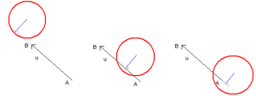
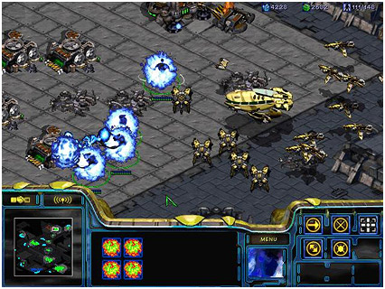
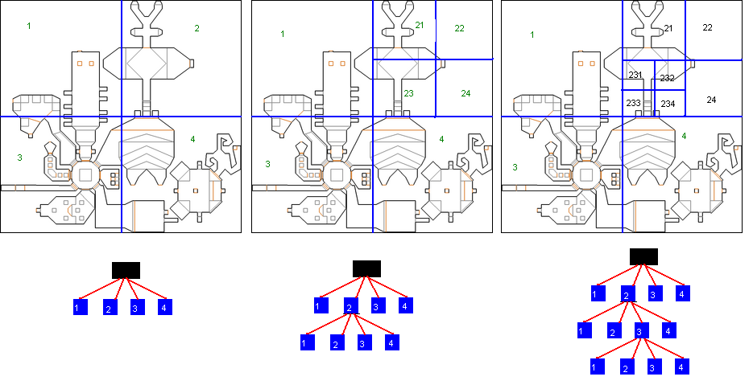

Vous programmez un jeu vidéo, et vous vous intéressez aux collisions d'objets.
Est-ce-que mon personnage touche un ennemi ? Est-ce-qu'il touche le sol ? Est-ce-que mon curseur de souris, un viseur, touche un ennemi ? Tout ceci, ce sont des tests de collision. Les collisions sont un aspect fondamental de tout jeu d'action ou d'animation en général.
Nous considèrerons une ou plusieurs fonctions Collision qui prendront en paramètre 2 objets, ou un objet et un monde fait de sols et de murs. Et ces fonctions renverront simplement un booléen, ayant donc pour valeur oui ou non, selon si ça touche ou non.
Toute la gestion des collisions s'appuiera sur ces fonctions. Selon votre jeu, selon vos besoins, les fonctions de collisions seront différentes, mais renverront toujours "oui" ou "non".
Comment implémenter ces fonctions de collision en fonction de vos besoins ? C'est la raison d'être de ce tutoriel, qui vous présentera plusieurs méthodes.
Les quelques fonctions d'exemple qui illustreront les différents cas seront codées en C, cependant facilement transcodables en d'autres langages.
Tout d'abord définissons AABB : Axis Aligned Bounding Box. Il s'agit d'un rectangle aligné avec les axes, c'est à dire que ses cotés sont parallèles aux axes des x et des y de votre repère (de votre écran pour les cas standard)
A la différence d'une OBB : Oriented Bounding Box, qui est un rectangle qui peut être orienté : ses cotés ne sont pas obligatoirement parallèles aux axes de votre repère.
Une AABB peut être définie par 4 paramètres : la position x,y de son coin supérieur gauche (en 2D, l'axe Y va vers le bas). Ainsi que de sa largeur w (comme width) et sa hauteur (h comme height)
Cela donne, en C, la structure suivante :
struct AABB
{
int x;
int y;
int w;
int h;
};
Notez, pour les utilisateurs de SDL, que cette structure est exactement SDL_Rect (à un type près), et que donc SDL_Rect est parfaite pour décrire une AABB.
Applications
Ce type de collision cherche donc à savoir si un point (de coordonnées x,y) est dans une AABB ou non. Dans quel cas avons nous besoin de ce type de collision ? Par exemple pour un jeu de tir comme Opération Wolf, ou la sélection d'un menu de ce bon vieux Warcraft premier du nom :
Dans la première image, j'ai encadré les cibles en vert. Ce sont les AABB qui les portent. Bien que cette collision ne soit pas parfaite (vous pouvez descendre l'ennemi en tirant juste au dessus de son épaule), elle est très utilisée et rapide. (Certains vont me dire qu'Opération Wolf affine ses collisions... ça se peut, mais considérons que non). L'idée de ce jeu est simple : on déplace le curseur à la souris (pointeur rouge) et quand on clique, on regarde s'il est dans une AABB ou non, tout simplement.
Pour la deuxième image, chaque option du menu est un rectangle, une AABB. On va aller cliquer sur une option ou une autre avec la souris. C'est la même collision.
Je renvoie un bool même si celui ci n'est pas défini en C, vous adapterez si besoin. Ce choix a été fait pour donner davantage de sémantique au code. Vous pouvez définir en C le type et les deux constantes suivantes :
typedef int bool;
#define true 1
#define false 0
Idéalement, en C, il est préférable de passer un pointeur vers une structure plutôt que la structure entière, cependant, ce tuto voulant rester théorique, je n'alourdirai pas le code par des pointeurs.
Le calcul est très simple : il y a collision si et seulement si le point est à l'intérieur de la box. Le point supérieur gauche est : (box.x;box.y) Le point inférieur droit est : (box.x+box.w-1;box.y+box.h-1)
Pourquoi -1 ? Parce que nous commençons à 0. Si nous ajoutons juste box.w à box.x, nous tombons sur le premier point hors de la box. Cependant, on peut se passer du -1 si on considère que le point testé sera strictement inférieur à ce premier point après la box.
Note : Il m'a été reproché de faire un if avec return true ou false, au lieu de mettre directement la condition dans le return, comme le permet le langage C. Ce choix a été fait pour des raisons de clarté, de sémantique, et de compréhension car tous les langages ne permettent pas de factoriser de la sorte. Si vous trouvez ça horrible, vous pouvez bien sûr adapter.
Je pense que la fonction parle d'elle même. Voici donc notre première fonction de collision !
Voici un autre test de collision. Cette fois ci, nous allons voir comment tester la collision entre 2 AABB.
Applications
Cette fonction est extrêmement utilisée dans énormément de jeux.
Nous voyons à gauche ce cher Mario. Il a sa boite englobante (en vert), et la tortue aussi. Comment voir s'il la touche ? Et bien en testant une collision entre 2 Bounding box. Pareil, à droite, Gradius est un shoot'em up à l'ancienne. Chaque vaisseau, chaque missile, a sa bounding box. Il faut tester les collisions entre notre vaisseau et tous les vaisseaux et missiles ennemis (ce qui nous fait perdre), et également la collision entre nos missiles et les vaisseaux ennemis (pour les détruire).
Il y a beaucoup de collisions à tester, cela doit donc être rapide de préférence.
Calcul de collision
La signature de notre fonction sera la suivante :
bool Collision(AABB box1,AABB box2)
L'idée est la suivante. Regardons le petit schéma ci dessous :
Le rectangle rouge est box1. J'ai dessiné des traits, rouge, bleu, jaune et vert, en prolongeant les cotés à l'infini. Pour savoir si un autre rectangle touche le rectangle rouge, raisonnons à l'envers : essayons de savoir quand il ne touche pas. Un rectangle box2 ne touche pas si :
il est complètement à gauche de la ligne jaune ;
il est complètement à droite de la ligne verte ;
il est complètement en haut de la ligne bleue ;
il est complètement en bas de la ligne rouge.
Voyons avec le dessin ci-dessous les exemples :
Le rectangle bleu est non seulement complètement à gauche de la ligne jaune, mais aussi complètement en bas de la ligne rouge : il ne touche pas.
Le rectangle vert est complètement au dessus de la ligne bleue : il ne touche pas.
Le rectangle jaune n'est ni complètement en haut, ni à gauche, ni à droite, ni en bas :il touche.
Voici la règle énoncée :
Pour savoir si la box2 est à droite du trait vert (donc trop à droite), on regarde simplement si sa coordonnée x (son minimum en x) est plus grande que le maximum en x de box1 (le maximum en x étant box1.x + box1.w -1 Donc on obtient le test suivant :
box2.x > box1.x + box1.w -1
Ce qui équivaut à :
box2.x >= box1.x + box1.w
Pour les 4 autres directions, le calcul est similaire.
La fonction suivante en découle :
bool Collision(AABB box1,AABB box2)
{
if((box2.x >= box1.x + box1.w) // trop à droite
|| (box2.x + box2.w <= box1.x) // trop à gauche
|| (box2.y >= box1.y + box1.h) // trop en bas
|| (box2.y + box2.h <= box1.y)) // trop en haut
return false;
else
return true;
}
La rapidité de cette collision est assurée. En très peu de calcul, on a notre résultat, ce qui permet de pouvoir faire beaucoup de tests dans le jeu sans ralentissements. Cette collision peut paraître grossière, mais elle est souvent largement suffisante pour beaucoup de cas. D'autres collisions plus fines, mais aussi plus coûteuses en temps de calcul, utiliseront cette collision auparavant, afin d'éliminer facilement les cas ou les objets ne se touchent clairement pas.
Les cercles sont également fort intéressants pour les collisions. On peut très rapidement tester si un point est dans un cercle, ou si deux cercles se touchent, ce qui peut être fort utile.
Définitions
Un cercle, c'est un centre x,y et un rayon.
Nous pouvons immédiatement définir une structure de cercle :
struct Cercle
{
int x,y;
int rayon;
};
Applications
Imaginons que vous vouliez cliquer dans une zone de cercle (crever des ballons par exemple), ou alors que vous fassiez un jeu de billard ou un jeu du genre Puzzle Bubble (même si je ne suis pas sur que Puzzle Bubble utilise rigoureusement cette collision), alors cette collision vous sera fort utile.
Calcul de collision
Point dans un cercle
Tout d'abord, voyons le cas d'un point dans un cercle. La signature de notre fonction sera la suivante :
bool Collision(int x,int y,Cercle C)
Vous souhaitez savoir si le point x,y est dans le cercle ou non. C'est très simple, il suffit de calculer la distance du point x,y au centre du cercle. Si cette distance est supérieure au rayon, alors vous êtes dehors, sinon, vous êtes dedans.
Pour le calcul de distance, pensez a Pythagore. Le calcul de la distance Euclidienne dans un plan se calcul simplement :
d = sqrt((x-C.x)^2 + (y-C.y)^2)
Le seul inconvénient de cette méthode, c'est qu'il y a une racine carrée. C'est une opération assez coûteuse, même si maintenant, les machines sont suffisamment puissantes pour ne pas trop s'en rendre compte. Si on peut l'éviter, alors on l'évite.
Et dans notre cas, on peut. En effet, on souhaite savoir si d>C.r ou pas. Or, d et C.r étant positifs, on peut dire que : d>C.r <=> d^2>C.r^2
Du coup, la racine carré disparaît : d^2 = (x-C.x)^2 + (y-C.y)^2
La fonction de collision est donc très simple :
bool Collision(int x,int y,Cercle C)
{
int d2 = (x-C.x)*(x-C.x) + (y-C.y)*(y-C.y);
if (d2>C.rayon*C.rayon)
return false;
else
return true;
}
Note : Une idée pour optimiser davantage est de stocker directement le rayon au carré dans la structure du cercle. Si le rayon reste contant, on gagnera en optimisation en évitant à chaque fois de recalculer C.rayon*C.rayon.
Collision de 2 cercles
Nous souhaitons maintenant savoir si 2 cercles se touchent. Pour un jeu de billard par exemple, c'est fort utile.
La signature de notre fonction sera celle ci :
bool Collision(Cercle C1,Cercle C2)
Comment savoir si deux cercles se touchent ? En réalité, c'est très simple : nous mesurons la distance entre leurs deux centres, et il suffit de voir si cette distance est supérieure ou inférieure à la somme des rayons.
La distance entre les rayons sera bien sûr un calcul similaire à ce qu'on a vu au dessus : d = sqrt((C1.x-C2.x)^2 + (C1.y-C2.y)^2)
L'astuce pour éliminer les carrés est la même. Nous obtenons donc la fonction suivante :
Note : Si le rayon des cercles est constant, alors (C1.rayon + C2.rayon)*(C1.rayon + C2.rayon) est contant aussi. On pourrait donc, si besoin, stocker cette valeur quelque part pour optimiser le calcul au lieu de le refaire à chaque fois. Merci à Sylvior pour cette remarque.
Tous ces algorithmes sont très rapides et utiles pour beaucoup de problèmes.
Nous parlerons ici de collisions avec des objets plus complexes. Vous aurez besoin de connaissances mathématiques avancées pour comprendre tous les concepts. Si ce n'est pas le cas, vous pouvez néanmoins utiliser les fonctions proposées telles quelles.
Jusqu'à présent, nous avons vu les AABB et les cercles. Comment tester si un point est dans une OBB (Oriented Bounding Box), dans un triangle, un hexagone, et plus généralement dans un polygone ?
Définitions
Polygone convexe
Sans reprendre la définition exacte d'un polygone (que vous trouverez en lien à la fin de ce paragraphe), nous allons définir ce qu'est un polygone convexe. Pour cela, nous allons d'abord présenter les polygones non-convexes :
Les polygones sont en rouge. Si on regarde les 3 polygones de gauche, on peut constater qu'à chaque fois, au moins une diagonale est hors du polygone. Les diagonales sont en bleu. Je rappelle que les diagonales d'un polygone sont des segments qui relient 2 sommets quelconques du polygone, mais qui ne sont pas des côtés.
La quatrième figure est un cas tordu : un polygone croisé, c'est-à-dire qu'il y a intersection entre au moins deux de ses cotés. Nous allons vite oublier ce quatrième cas.
Les polygones ci-dessus sont donc convexes. Ils ne sont pas croisés, et il n'existe pas de diagonales à l'extérieur.
Pour en savoir plus sur les polygones, et leur classification, consultez Wikipedia .
De non-convexe à convexe
Un polygone non-convexe peut être transformé en un ensemble de polygones convexes. Si on regarde la figure ci-dessus sur les polygones non-convexes, j'ai ajouté des traits verts qui découpent les polygones en plusieurs triangles. Comme chaque triangle est convexe, on transforme ainsi le polygone non-convexe en plusieurs polygones convexes.
Vérifier si un point est dans ce polygone non-convexe reviendra à vérifier s'il est dans l'un des triangles qui le compose.
Un algorithme pour transformer le polygone non-convexe en triangles peut être le suivant : 1 - On parcourt les points du polygone non-convexe. 2 - Pour un point i, on considère son voisin précédent et son voisin suivant. Si le triangle formé par ces trois points est dans le polygone, alors on ajoute le triangle à la liste, et on considère le polygone non-convexe restant comme étant le même polygone auquel on retire le sommet i (on relie donc i-1 et i+1). 3 - etc.
C'est un algorithme glouton, et le polygone restant finit par être un triangle.
On peut tester l'appartenance du triangle en regardant si l'angle du point i est aigu ou obtus par rapport au sens de parcours.
Applications
Un jeu comme Risk peut recourir à cette collision. Chaque pays peut être vu comme un polygone (non-convexe), donc par un ensemble de polygones convexes.
Quand vous choisissez un pays en cliquant dessus, cette collision est appliquée.
Calcul de collision première méthode
Regardez à gauche
Pour cette méthode, nous considérons un polygone convexe (s'il n'est pas convexe, regardez ci-dessus comment faire pour le décomposer en plusieurs polygones convexes)..
Voici de nouveau mes polygones convexes. Cette fois j'ai rajouté des flèches. En effet, je vais parcourir mes points dans l'ordre, comme si je partais d'un point, et que j'avançais en voiture sur le tour de mon polygone. L'idée est de choisir le bon sens de façon à ce que l'intérieur du polygone soit à gauche.
Voici l'idée :
Il va donc falloir, pour chaque coté orienté, voir si le point testé est à gauche ou non. S'il est, ne serait ce qu'une fois, à droite, alors le point n'est pas à l'intérieur.
Il ne reste plus qu'a savoir si un point est à gauche ou pas. Sur la figure ci-dessus, il y a un segment [AB]. On va de A vers B. Le Point P est il à gauche ?
Le déterminant
Mathématiquement, un simple calcul de déterminant suffit. Nous avons les points A, B, P. Soit D le vecteur AB :
Nous obtenons une fonction de collision comme ceci :
bool Collision(Point tab[],int nbp,Point P)
{
int i;
for(i=0;i<nbp;i++)
{
Point A = tab[i];
Point B;
if (i==nbp-1) // si c'est le dernier point, on relie au premier
B = tab[0];
else // sinon on relie au suivant.
B = tab[i+1];
Vecteur D,T;
D.x = B.x - A.x;
D.y = B.y - A.y;
T.x = P.x - A.x;
T.y = P.y - A.y;
float d = D.x*T.y - D.y*T.x;
if (d<0)
return false; // un point à droite et on arrête tout.
}
return true; // si on sort du for, c'est qu'aucun point n'est à gauche, donc c'est bon.
}
A vous de voir si vous voulez qu'un point sur AB soit considéré comme dedans ou dehors, en mettant if (d<0) ou if (d<=0). Cependant, ça reste un cas limite.
Calcul de collision deuxième méthode
La deuxième méthode permet de tester si un point est dans un polygone quelconque. Convexe ou non, cette méthode fonctionne dans tous les cas, même dans les cas de polygones croisés. Il faudra cependant faire très attention à ce qu'on appellera les "cas limites".
Point infini
Pour cet algo, nous allons chercher un point I qui sera en dehors du polygone. Comment être sûr qu'un point est en dehors ? Il suffit de le prendre très loin. Par exemple, on peut poser I(100000,0).
Nous partons du principe que notre polygone est sagement dans notre monde, et, notre monde étant par exemple compris entre -1000 et +1000, nous sommes sûr que le point I(100000,0) est hors du monde, et hors du polygone.
Regardons le schéma ci-dessus. Des polygones, et des segments verts dont une extrémité est un des points P, Q, R, S, T, et l'autre extrémité est... loin ! (le point I lointain)
Voici la règle :
Vérifions tout ça avec les exemples ci-dessus :
Pour P, on coupe une fois : 1 est impair, P est à l'intérieur ;
Pour Q, idem ;
Pour R, on coupe deux fois. 2 est pair, on est à l'extérieur ;
Pour S, on coupe 5 fois, impair, on est dedans ;
Pour T, on coupe 4 fois, pair, on est dehors.
Cet algo revient donc à savoir combien de fois on coupe, donc se base sur un algo d'intersection de segments.
Intersection de segments
Un segment est inscrit dans une droite. Nous allons donc considérer l'équation paramétrique d'une droite. Ceci est vu, me semble-t-il, à la fin du lycée.
P(t) = O + t*\vec{D}
Une droite est définie par un point d'origine O, et un vecteur directeur \vec{D} En faisant varier t, on obtient tous les points de la droite.
Si on s'intéresse à un segment [AB], posons astucieusement \vec{D} = \vec{AB} et O = A.
Nous aurons donc les règles suivantes :
Si t=0, alors P(t) = A ;
Si t=1, alors P(t) = B ;
Si t appartient au segment [0..1] alors P(t) appartient au segment [AB], sinon, il n'est pas sur le segment.
Nous cherchons l'intersection de 2 segments [AB] et [IP]. Soit J le point d'intersection. Nous cherchons donc :
\left \{\begin{array} .J = A + t*\vec{AB} \\J = I + u*\vec{IP} \\\end{array} ight.
Où t et u seront les paramètres du point J sur chacune des deux droites (AB) et (IP). Ce qui nous donne :
Nous résolvons le système pour trouver t et u. Nous obtenons : t = - \frac{A_x*E_y-I_x*E_y-E_x*A_y+E_x*I_y}{D_x*E_y-D_y*E_x}u = - \frac{-D_x*A_y+D_x*I_y+D_y*A_x-D_y*I_x}{D_x*E_y-D_y*E_x}
Si le dénominateur (qui est le même pour t et u) s'annule, cela veut dire que les droites (AB) et (IJ) sont parallèles : donc J n'existe pas (ou alors l'intersection est l'ensemble de la droite).
Sinon, cela veut dire qu'il existe un point J intersection des droites (AB) et (IJ). Mais nous, nous cherchons l'intersection des segments. Il faut donc regarder si 0<=t<1 et 0<=u<1. Dans ce cas seulement, l'intersection se produit au niveau des segments.
Nous nous appuierons sur la fonction d'intersection de segments suivante :
int intersectsegment(Point A,Point B,Point I,Point P)
{
Vecteur D,E;
D.x = B.x - A.x;
D.y = B.y - A.y;
E.x = P.x - I.x;
E.y = P.y - I.y;
double denom = D.x*E.y - D.y*E.x;
if (denom==0)
return -1; // erreur, cas limite
t = - (A.x*E.y-I.x*E.y-E.x*A.y+E.x*I.y) / denom;
if (t<0 || t>=1)
return 0;
u = - (-D.x*A.y+D.x*I.y+D.y*A.x-D.y*I.x) / denom;
if (u<0 || u>=1)
return 0;
return 1;
}
Vous pouvez constater que je retourne 0 si les segments ne se touchent pas, 1 s'ils se touchent, et -1 dans les cas limites. Nous en aurons besoin pour la suite.
Fonction de collision
Nous en arrivons à la fonction de collision. Nous allons prendre un point I au hasard, mais loin. Puis nous allons calculer le nombre d'intersections avec chacun des segments. Si nous avons un nombre impair d'intersection, alors le point sera dedans, sinon dehors. Nous ajoutons que si on tombe sur un cas limite (une droite parallèle à un des cotés), nous choisirons à nouveau un autre I.
bool Collision(Point tab[],int nbp,Point P)
{
int i;
Point I;
I.x = 10000 + rand()%100; // 10000 + un nombre aléatoire entre 0 et 99
I.y = 10000 + rand()%100;
int nbintersections = 0;
for(i=0;i<nbp;i++)
{
Point A = tab[i];
Point B;
if (i==nbp-1) // si c'est le dernier point, on relie au premier
B = tab[0];
else // sinon on relie au suivant.
B = tab[i+1];
int iseg = intersectsegment(A,B,I,P);
if (iseg == -1)
return Collision(tab,nbp,P); // cas limite, on relance la fonction.
nbintersections+=iseg;
}
if (nbintersections%2==1) // nbintersections est-il impair ?
return true;
else
return false;
}
Nous allons maintenant voir si un cercle touche un segment ou une droite. Nous allons faire pas mal de maths ici, si ça vous fait peur, vous pouvez prendre les fonctions finales.
Applications
Un jeu de flipper par exemple : vous testez les collisions entre la boule et chaque bord, représenté par des segments. Même les flips sont comme des segments pour les collisions.
Contre exemple : Les casse briques. Les casse briques, c'est une balle qui touche une raquette "horizontale". Il suffit de regarder, quand le y de la balle est en deçà d'une certaine valeur, si la raquette est en dessous ou non. De même on considerera souvent la balle comme une AABB.
Ici, je parlerai d'un cas général de collision entre un cercle et un segment quelconque.
Calcul de collision
Un petit schéma pour commencer.
Nous avons le cercle de centre C et de rayon r. Nous avons la droite d'équation paramétrique P(t) = O + t*\vec{u}. Nous souhaitons avoir la distance CI, avec le point I projection orthogonale de C sur la droite. Nous ne connaissons pas I.
Je rappelle que si on a 2 points A et B, on peut définir l'équation paramétrique de la droite en posant O = A et \vec{u} = \vec{AB}
La règle est simmple, et facile à voir en regardant le schéma :
Pour un segment, il y aura une précaution supplémentaire à prendre en compte que nous verrons plus loin.
La distance CI
Un petit peu de trigo, considérons le triangle ACI rectangle en I. Le point I est inconnu, mais A et C sont connus. Nous cherchons la distance CI.
Nous connaissons la distance AC, c'est la norme du vecteur \vec{AC}
Je rappelle que la norme d'un vecteur v est sa longueur, et qu'elle se calcule ainsi : ||v|| = sqrt{v_x^2 + v_y^2}
Dans notre triangle ACI, nous pouvons écrire que : sin(a) = \frac{CI}{AC}, donc que CI = AC * sin(a) (1) avec a l'angle formé entre les 2 vecteurs \vec{AI} et \vec{AC}
Ce qui nous embête maintenant, c'est cet angle, qu'il faudrait calculer. Soit on le calcule, soit on le vire. Une astuce est d'invoquer le produit vectoriel des deux vecteurs. Une des formules du produit vectoriel est la suivante :
||\vec{u}\wedge\vec{AC}|| = ||\vec{u}||*||\vec{AC}||*sin(a) or ||\vec{AC}|| = AC donc :
Nous obtenons donc : CI = \frac{||\vec{u}\wedge\vec{AC}||}{||\vec{u}||} (3)
Nous nous sommes débarrassé de l'angle. Nous n'avons plus qu'un produit vectoriel et 2 normes à calculer. Un produit vectoriel considère des vecteurs dans l'espace. Cependant, nous sommes dans le plan, donc c'est comme si nous étions dans l'espace, mais que les coordonnées z des vecteurs étaient à 0. A partir de la, la norme d'un produit vectoriel sera un vecteur \vec{v}dont les composantes x et y seront nulles, et seule sa composante z sera non nulle. Prendre la norme de ce vecteur reviendra à prendre la valeur absolue de cette composante z, comme ceci :
et donc, dans notre cas : ||\vec{u}\wedge\vec{AC}|| = ||\vec{v}|| = |u_x*AC_y - u_y*AC_x|
Il suffira de diviser cette valeur absolue par la norme de u pour obtenir CI.
Et il nous suffira donc de savoir si CI est plus grand que le rayon ou non... Voici le code pour tester si le cercle C touche la droite AB :
bool CollisionDroite(Point A,Point B,Cercle C)
{
Vecteur u;
u.x = B.x - A.x;
u.y = B.y - A.y;
Vecteur AC;
AC.x = C.x - A.x;
AC.y = C.y - A.y;
float numerateur = u.x*AC.y - u.y*AC.x; // norme du vecteur v
if (numerateur <0)
numerateur = -numerateur ; // valeur absolue ; si c'est négatif, on prend l'opposé.
float denominateur = sqrt(u.x*u.x + u.y*u.y); // norme de u
float CI = numerateur / denominateur;
if (CI<C.rayon)
return true;
else
return false;
}
Restriction au segment

Pour le test d'un point dans un cercle, je vous renvoie au début de ce tutoriel.
Alors l'idée est de savoir si I est entre A et B.
Pour cela, nous allons utiliser le produit scalaire, rapide, et qui a des propriétés bien sympathiques. Regardez le dessin de gauche. J'ai les points A,B qui me donnent un vecteur \vec{AB}, qui part de A. Au point A, on imagine une frontière verte, orthogonale au vecteur. Si on appelle P l'un des points (rouge ou bleu), le signe du produit scalaire \vec{AB}.\vec{AP} nous permet de savoir de quel coté de la ligne verte on est. Si le produit scalaire est positif, on est du coté de B, sinon, on est de l'autre coté.
Maintenant, nous voulons savoir si I est entre A et B. Regardons le dessin de droite ci-dessus. Comme I est le projeté orthogonal de C sur la droite, alors pour savoir si I est entre A et B, il suffit de regarder si C est dans la bande verte ou non. Pour cela, on applique 2 produits scalaires :
Si pscal1>0 ET pscal2>0, alors C est dans la bande verte, et donc I entre A et B.
Cela nous donne la fonction suivante :
bool CollisionSegment(Point A,Point B,Cercle C)
{
if (CollisionDroite(A,B,C) == false)
return false; // si on ne touche pas la droite, on ne touchera jamais le segment
Vecteur AB,AC,BC;
AB.x = B.x - A.x;
AB.y = B.y - A.y;
AC.x = C.x - A.x;
AC.y = C.y - A.y;
BC.x = C.x - B.x;
BC.y = C.y - B.y;
float pscal1 = AB.x*AC.x + AB.y*AC.y; // produit scalaire
float pscal2 = (-AB.x)*BC.x + (-AB.y)*BC.y; // produit scalaire
if (pscal1>=0 && pscal2>=0)
return true; // I entre A et B, ok.
// dernière possibilité, A ou B dans le cercle
if (CollisionPointCercle(A,C))
return true;
if (CollisionPointCercle(B,C))
return true;
return false;
}
Le point d'impact
Actuellement, nous avons une information sur l'entrée en collision ou non. Mais il peut être utile de savoir à quel endroit on touche. On touche au point I bien entendu, mais comment calculer I ?
Nous avons vu que notre droite a pour équation : P(t) = A + t*\vec{u} (avec \vec{u} = \vec{AB} dans notre cas) I appartient à la droite, donc il existe t_i tel que : I = A + t_i*\vec{u} (5)
Si on regarde le triangle AIC rectangle en I, de nouveau, avec un peu de trigonométrie, on trouve :
cos(a) = \frac{AI}{AC}, avec a angle au sommet A. AI = AC*cos(a) (6)
Ici, il est astucieux de considéder la formule suivante du produit scalaire.
\vec{u}.\vec{AC} = ||\vec{u}||*||\vec{AC}||*cos(a) (7) Sachant que ||\vec{AC}|| = AC
En utilisant (6) et (7), on trouve : AI = \frac{\vec{u}.\vec{AC}}{||\vec{u}||}
Si on veut t_i, il faut diviser par la norme de u. Cela donne : t_i= \frac{\vec{u}.\vec{AC}}{||\vec{u}||^2}
Cela nous épargnera, au niveau optimisation, de calculer la racine carrée de la norme de u puisqu'on la considère au carré.
Nous obtenons la formule finale suivante :
I = A + \frac{\vec{u}.\vec{AC}}{||\vec{u}||^2}*\vec{u}
Au niveau du code nous avons donc une droite (AB), et un point C à projeter :
La normale est le vecteur orthogonal à la tangente qui "regarde" le point C. Avoir la normale au point d'impact permet de calculer un rebond par exemple. Sur une droite, la normale est constante en tout point.
On utilise souvent le produit vectoriel pour calculer des normales. Ici, on fera pareil, en utilisant deux produits vectoriels, un pour calculer un vecteur v orthogonal a notre plan \vec{v} = \vec{u}\wedge\vec{AC} , puis on refera un autre produit vectoriel pour trouver notre normale n \vec{n} = \vec{v}\wedge\vec{u}. L'avantage de cette méthode, c'est que la normale "regardera" toujours C, qu'il soit d'un coté ou de l'autre de la droite. Cet algo fonctionne aussi dans l'espace, pour trouver le vecteur \vec{IC}.
Si on appliques les formules des deux produits vectoriels, on trouve simplement, pour la normale : N_x = -u_y*(u_x*AC_y-u_y*AC_x)N_y = u_x*(u_x*AC_y-u_y*AC_x)
Il est d'usage qu'une normale soit normalisée... autrement dit que sa norme (sa longueur) soit 1. Il suffit de diviser N par sa norme : \vec{N}_{normalise} = \frac{\vec{N}}{||\vec{N}||}
Au niveau du code, cela nous donne la chose suivante :
Vecteur GetNormale(Point A,Point B,Point C)
{
Vecteur AC,u,N;
u.x = B.x - A.x;
u.y = B.y - A.y;
AC.x = C.x - A.x;
AC.y = C.y - A.y;
float parenthesis = u.x*AC.y-u.y*AC.x; // calcul une fois pour les deux
N.x = -u.y*(parenthesis);
N.y = u.x*(parenthesis);
// normalisons
float norme = sqrt(N.x*N.x + N.y*N.y);
N.x/=norme;
N.y/=norme;
return N;
}
Une utilisation de tout ça : le rebond
Voici une utilisation pratique de tout ça : un calcul de rebond. Un jeu de flipper par exemple : votre balle arrive sur un mur en biais, vous voulez calculer le rebond : dans quel sens va-t-elle repartir ?
Regardons le dessin ci-dessus. La balle (qu'on ne voit pas) arrive avec une trajectoire suivant le vecteur v rouge (de A vers I) Après rebond, il faudra qu'elle reparte avec la trajectoire v_2 violet, de I vers B.
Nous calculons grâce à la fonction de collision si on touche la droite. Ensuite, si on touche, il faut faire rebondir. Pour cela, on aura besoin de la normale (en bleu) au segment (qu'on calculera comme vu au dessus).
Le vecteur v_2 est tel que la normale soit la bissectrice des vecteurs v et v_2 au point I. Sur le dessin, j'ai mis les angles égaux.
J est le projeté orthogonal de A sur la droite faite par le point I et la normale. Le vecteur v_3 est le même que le vecteur v_2, en partant de A au lieu de I, mais c'est le même vecteur. Géométriquement, on peut démontrer que J est le milieu de [IK], et J est aussi le milieu de [AB].
Le vecteur \vec{N} est normalisé : rappelez vous, les normales sont normalisées.
La longueur IJ (qu'on pourra aussi appeler d) s'obtient à partir d'un produit scalaire :
d = IJ = \vec{IA}.\vec{N} = - \vec{AI}.\vec{N} (7) Je considère IA et non AI pour avoir une longueur positive.
On veut calculer le vecteur \vec{IB}, donc \vec{AK} Géométriquement : \vec{AK} = (K) - (A) = (I + 2*d*\vec{N}) - (I - \vec{AI}) On simplifie : \vec{AK} = 2*d*\vec{N} + \vec{AI}
En injectant (7), je trouve : \vec{AK} = 2*(- \vec{AI}.\vec{N})*\vec{N} + \vec{AI} \\ = \vec{AI} - 2*(\vec{AI}.\vec{N})*\vec{N}
Enfin, un petit code pour terminer cette grande partie. On donne le vecteur v (= \vec{AI}) incident, et la normale, et on calculera le vecteur de rebond :
Nous pouvons penser que ce genre n'est pas trop utilisée, car un personnage est rarement représenté par un segment. Il peut être représenté par un point, par une AABB, un polygone, un cercle... Mais rarement un segment.
Cependant, en raisonnant comme cela, vous pensez à un état figé.
Maintenant, regardez ce schéma :
Votre personnage est le point O. Il y a un mur, représenté par le segment AB. Il veut avancer vers le point P (donc selon le vecteur OP). Se prend-il le mur ?
Pour le savoir, nous regarderons la collision entre les segments [AB] et [OP].
Applications
Quoi ? Un jeu 3D comme Doom dans la rubrique 2D ? o_O
Oh que oui... Le premier Doom, une merveille, un jeu faussement 3D. Un amas de trapèzes qui nous font penser à la 3D, mais un jeu en interne bien 2D...
Quel beau monde en 3D n'est ce pas ? Un beau couloir multicolore... Dites merci à votre cerveau de vous faire voir un monde en 3D, parce que moi je n'ai dessiné que des trapèzes... (un rectangle est un trapèze particulier). Des trapèzes dont les bases sont alignées avec l'axe des Y, bien droit. Voila, dans Doom, tous les murs sont des trapèzes. Mais ça, c'est l'affichage. En réalité, dans Doom, en mémoire, il n'y a qu'une map 2D (comme la 2e image que je présente ici, ces segments rouges et jaunes (mais pas à petits pois, la génération Dorothée comprendra la blague).
Donc dans Doom, le personnage est un point dans une carte 2D faite de plein plein de segments qui représentent les murs.
Nous sommes donc tout à fait dans le cas vu plus haut, à savoir que nous sommes un point O, nous voulons avancer vers P. Touchons nous le segment [AB] ?
Calcul de collision
Nous allons Calculer cette collision en 2 étapes :
En effet, si P et O sont du même coté de la droite (AB), on peut tout de suite dire "il n'y aura pas collision". On peut donc calculer la collision entre le segment [OP] et la droite (AB)
Calcul de collision entre segment et droite
Rappelez vous le calcul du déterminant de 2 vecteurs qui me dit si un point est "à gauche" ou "à droite" d'une droite. Si on considère le vecteur AB, et le vecteur AP, le déterminant de d = \det(\vec{AB},\vec{AP}) me dit si mon point P est à gauche ou à droite du mur (en considérant le mur comme "démarrant" au point A et "regardant" le point B.
Si (d>0), P est à gauche
si (d<0), P est à droite
si (d==0), P est dans le mur : on va éviter ce cas la.
On va partir du principe que P n'est jamais dans le mur. En effet, dans un jeu comme Doom, on commence hors d'un mur, et quand on évolue, on ne permet pas d'aller "dans" le mur. On permet d'aller proche, mais jamais dedans. Donc on n'est jamais "dans" un mur. Donc d n'est jamais égale à 0.
Maintenant, on calcule le déterminant d_P = \det(\vec{AB},\vec{AP}) et d_O = \det(\vec{AB},\vec{AO}) pour savoir de quel coté sont P et O.
Si d_P>0 et d_O>0 alors ils sont du meme coté
Si d_P<0 et d_O<0 alors ils sont du meme coté
Si d_P>0 et d_O<0 alors ils ne sont pas du même coté
Si d_P<0 et d_O>0 alors ils ne sont pas du même coté
ça nous fait 4 conditions à voir, sauf si on pense aux propriétés de la multiplication, qui vont nous simplifier le travail :
Si d_P * d_O >0 alors ils sont du meme coté
Si d_P * d_O <0 alors ils ne sont pas du meme coté
Une idée simple pour calculer la collision entre segment et segment est de se servir deux fois de la formule ci dessus. Si vous avez 4 points ABOP, que vous voulez calculer la collision entre le segment [AB] et le segment [OP], il suffit de calculer la collision entre la droite (AB) et le segment [OP], puis la collision entre la droite (OP) et le segment [AB]. Si les deux collisions sont valides, alors les segments se touchent.
Au niveau du code, cela donne :
bool CollisionSegSeg(Point A,Point B,Point O,Point P)
{
if (CollisionDroiteSeg(A,B,O,P)==false)
return false; // inutile d'aller plus loin si le segment [OP] ne touche pas la droite (AB)
if (CollisionDroiteSeg(O,P,A,B)==false)
return false;
return true;
}
Calcul de collision entre segment et segment, forme paramétrique
Cette méthode est plus complexe que la précédente, mais permettra de calculer le point d'intersection. Grâce au calcul segment/droite, on sait que les points O et P sont de part et d'autre de la droite (AB), mais il y a collision segment/segment seulement si le point d'intersection I est entre A et B. Sinon, le personnage passe à coté du mur : il n'y a pas collision.
Nous allons donc voir si l'intersection est entre A et B ou non. De cette condition dépendra notre collision.
Posons la forme paramétrique de la droite (AB) : I = A + k*\vec{AB}
Avec cette forme, nous pouvons affirmer que I est entre A et B si et seulement si 0<=k<=1
Il ne reste plus qu'à trouver k.
I appartient également à la droite (OP), donc : I = O + l*\vec{OP}
Du coup, on peut écrire :
A + k*\vec{AB} = O + l*\vec{OP}
Nous sommes dans le plan, nous pouvons décomposer les points et les vecteurs comme suite :
Notez que pour notre cas, nous n'avons pas besoin de l. Je le mets quand même car on en aura besoin plus loin si on veut s'approcher au plus près du mur.
Voici la fonction de Collision Segment-Segment :
bool CollisionSegSeg(Point A,Point B,Point O,Point P)
{
if (CollisionDroiteSeg(A,B,O,P)==false)
return false; // inutile d'aller plus loin si le segment [OP] ne touche pas la droite (AB)
Vecteur AB,OP;
AB.x = B.x - A.x;
AB.y = B.y - A.y;
OP.x = P.x - O.x;
OP.y = P.y - O.y;
float k = -(A.x*OP.y-O.x*OP.y-OP.x*A.y+OP.x*O.y)/(AB.x*OP.y-AB.y*OP.x);
if (k<0 || k>1)
return false;
else
return true;
}
Ne pas aller dans le mur
Pour terminer ce chapitre, quelques idées pour éviter de se retrouver dans le mur. Si vous êtes le point O et que vous allez vers le mur, alors il y aura collision. L'idée est d'avancer quand même "jusqu'au mur".
Comme nous allons dans le mur, nous ne déplacerons pas notre joueur selon le vecteur \vec{OP}, qui nous amènerait au dela du mur (au point P). Nous ne le déplacerons pas non plus selon le vecteur l*\vec{OP}, qui nous amènerait dans le mur exactement (ce que nous voulons absolument éviter, il ne faut jamais être "dans" le mur) Nous déplacerons le joueur selon le vecteur (l-e)*\vec{OP} ou e est un nombre positif très petit (un "epsilon" dit-on dans le jargon mathématique), par exemple 0.001 Ainsi, nous nous approcherons au plus près du mur, sans être dedans, ni passer à travers.
Nous cherchons maintenant à déterminer la collision entre un cercle et une AABB.
Cette collision pourra, dans certains cas tordus, être un peu calculatoire. C'est pour cela que l'idée sera d'éliminer le plus rapidement possible les cas triviaux. Comme ces cas seront majoritaires, la collision sera en moyenne très rapide.
Regardons le schéma suivant :
Je souhaite tester la collision entre le cercle vert, et la AABB rouge.
Première étape, le cercle peut être lui même inscrit dans une AABB, que l'on peut calculer facilement. Mieux, si votre sprite est une balle, sa surface porteuse sera rectangulaire, et sera directement la AABB violette : vous n'aurez donc même pas à la calculer, il suffira de passer la surface porteuse !
Premier test
Premier test, nous allons tester la collision AABB vs AABB de nos deux AABB rouge et violette. Ce test est rapide, et élimine déjà tous les cas ou les objets sont suffisamment loin. En effet, s'il n'y a pas collision entre ces deux AABB, inutile d'aller plus loin : il n'y a pas collision.
S'il y a collision AABB, alors nous sommes dans l'un de ces cas :
Nous allons continuer à éliminer rapidement les cas triviaux :
Deuxième test
Nous allons voir si un des sommets de la AABB rouge est dans le cercle, grâce à la collision rapide "Point dans Cercle" vue plus haut. Nous pourrons alors dire qu'il y a collision dans les cas A et D, et sortir de l'algorithme.
Troisième test
Afin de détecter le cas C, nous allons faire une collision "Point dans AABB" sur le centre du cercle et la AABB rouge. Nous pouvons alors sortir de l'algorithme dans ce cas.
A partir d'ici, cela devient plus calculatoire : nous sommes soit dans le cas B, soit dans le cas E. La bonne nouvelle, c'est que dans la majorité des cas, nous serons sortis avant.
Quatrième test
Il faut donc lever l'ambiguïté entre le cas B, et le cas E. La différence entre ces deux cas, se situe au niveau des segments de la AABB. Nous allons considérer chacun des 4 segments de la AABB. Pour chacun de ces segments, nous allons projeter le point centre du cercle sur le segment. Si la projection est sur le segment, alors nous sommes dans le cas E, si elle est hors du segment, alors on est dans le cas B.
Si on regarde le schéma suivant :
Nous avons le segment AB. Nous projetons un point dessus, soit le rouge, soit le vert, soit le bleu. Seul le vert est projeté sur le segment, les deux autres sont hors du segment. Cela signifie que le point vert est entre les deux droites bleu ciel, droites passant respectivement par A et B et perpendiculaires au segment AB.
Pour déterminer si le point sera projeté sur le segment ou dehors, c'est assez simple. Soit C le point à tester. Nous allons considérer les produits scalaires suivants :
s1 = \vec{AC}.\vec{AB}s2 = \vec{BC}.\vec{AB}
Le signe de ces produits scalaires va nous donner immédiatement la réponse :
Si s1>0 et s2>0, alors nous sommes hors du segment, coté B (point bleu) ;
Si s1<0 et s2<0, alors nous sommes hors du segment, coté A (point rouge) ;
Si s1>0 et s2<0, alors nous sommes dans le segment (point vert) ;
Si s1<0 et s2>0, alors nous avons un grave problème mathématique.... Ce cas n'existe pas !
Évidemment, nous avons aussi les cas limites où s1==0, s2==0.
Mais pour simplifier, basons-nous sur la règle des signes :
si s1*s2>0, on est dehors ;
sinon, on est dedans.
Vous pouvez remplacer >0 par >=0 si vous considérez le segment comme ouvert : ]AB[ au lieu de [AB].
Après avoir fait ces projections sur les 4 segments de la AABB (en réalité, 2 suffisent car les segments sont parallèles et "en face" 2 à 2) ; si les points calculés sont tous dehors, nous sommes dans le cas B (pas de collision), sinon nous sommes dans le cas E (collision).
Et pour finir, petit algorithme formel pour illustrer :
bool CollisionCercleAABB(Cercle C1,AABB box1)
{
AABB boxCercle = GetBoxAutourCercle(C1); // retourner la bounding box de l'image porteuse, ou calculer la bounding box.
if (CollisionAABBvsAABB(box1,boxCercle)==0)
return false; // premier test
if (CollisionPointCercle(box1.x,box1.y,C1)==1
|| CollisionPointCercle(box1.x,box1.y+box1.h,C1)==1
|| CollisionPointCercle(box1.x+box1.w,box1.y,C1)==1
|| CollisionPointCercle(box1.x+box1.w,box1.y+box1.h,C1)==1)
return true; // deuxieme test
if (CollisionPointAABB(C1.x,C1.y,box1)==1)
return true; // troisieme test
int projvertical = ProjectionSurSegment(C1.x,C1.y,box1.x,box1.y,box1.x,box1.y+box1.h);
int projhorizontal = ProjectionSurSegment(C1.x,C1.y,box1.x,box1.y,box1.x+box1.w,box1.y);
if (projvertical==1 || projhorizontal==1)
return true; // cas E
return false; // cas B
}
int ProjectionSurSegment(int Cx,int Cy,int Ax,int Ay,int Bx,int By)
{
int ACx = Cx-Ax;
int ACy = Cy-Ay;
int ABx = Bx-Ax;
int ABy = By-Ay;
int BCx = Cx-Bx;
int BCy = Cy-By;
int s1 = (ACx*ABx) + (ACy*ABy);
int s2 = (BCx*ABx) + (BCy*ABy);
if (s1*s2>0)
return 0;
return 1;
}
Nous verrons avec le temps les collisions d'autres objets complexes.
L'utilisation des masques va permettre de détecter des collisions sur des zones de forme quelconques.
Définition
Au sens strict du terme, on appelle "masque" une image faite de 2 couleurs qui représente un objet de façon monochrome. Ci dessous par exemple, vous voyez ce cher Véga, à gauche, et la même image qui représente le masque de cette image à droite :
Si vous manipulez SDL par exemple, vous connaissez déjà la notion de masque, même sans forcément en connaître le nom, au moins pour le concept d'affichage. Avec SDL, ou autre librairie graphique 2D, vous définissez une "keycolor", c'est à dire une couleur qui sera transparente : si vous affichez Véga, vous ne voulez pas que le noir autour s'affiche, donc vous définirez que la keycolor sera la noir, et la carte graphique n'affichera que les pixels du personnage.
Si vous manipulez des PNG, ou des images 32 bits, le format permet directement de définir de la transparence pour chaque pixel (alpha channel). Il est d'usage de mettre les pixels qui correspondent à Véga en "opaque" et le noir autour en "complètement transparent".
Finalement, pour l'affichage, la machine va afficher uniquement la partie "blanche" si on regarde le masque, donc uniquement Véga.
Point sur une image
Si maintenant, vous souhaitez cliquer sur l'image, et savoir si vous cliquez bien sur Véga, au pixel près, et non sur le noir autour, vous considérez la collision "Point sur image".
L'idée est très simple : vous cliquez sur l'image. Tout d'abord, il faut savoir si vous cliquez dans la AABB de cette image ou pas. En effet, si vous personnage est à l'autre bout de l'écran par rapport à votre pointeur de souris, inutile d'aller vérifier au pixel près si vous touchez, car ce n'est pas le cas.
Considérons la fonction "PixelMaskColor(I,x,y)" qui renverra 1 si le pixel du masque de l'image I à la coordonnée x,y est blanc, 0 s'il est noir.
Cette fonction dépendra de comment vous codez le bord du personnage :
Si vous utilisez une keycolor, il faudra lire le pixel, et le comparer à la keycolor. Si ce pixel est de la même couleur, on renvoie 0, sinon on renvoie 1
Si vous utilisez l'alpha channel, vous regarderez la composante alpha du pixel, et renverrez 0 si le pixel est complètement transparent, 1 sinon
Nous pouvons écrire la fonction suivante :
bool CollisionPixelMasque(Image I,AABB box,int curseur_x,int curseur_y)
{
if (CollisionPixelAABB(box,curseur_x,curseur_y)==false)
return false;
int xlocal = curseur_x - box.x;
int ylocal = curseur_y - box.y;
if (PixelMaskColor(I,xlocal,ylocal)==1)
return true;
else
return false;
}
xlocal et ylocal sont les coordonnées locales du pixel à tester dans l'image I. Par exemple, si votre image démarre à la coordonnée 100,100, et que vous cliquez à la coordonnée 110,110, il est clair qu'il faudra tester les pixels de coordonnée 10,10 dans l'image. 10,10 étant les coordonnées locales du pixel à tester dans le repère de l'image.
Masques multicolores
Nous pourrons considérer des masques multicolores. Cela pourra être fort utile pour les jeux du genre "point & clic". Si on regarde les images suivantes, de Day Of The Tentacle :
Le personnage évolue dans des décors farfelus. On peut cliquer sur une porte pour qu'il y aille, cliquer sur le sol pour qu'il se déplace, et également cliquer sur les objets.
Pour déterminer toutes ces zones à partir d'un masque, une idée est de dessiner 2 images par décor : l'image affichée, et aussi une image faite de zones de couleur, comme l'image de droite. Pour détecter la collision du pointeur de souris, il suffira de lire le pixel du masque à l'endroit ou on a cliqué. Si je clique sur la zone rouge, Bernard ira vers la porte du fond. Si je clique sur la zone bleue, il ira vers la porte de droite.
Notez que pour mon exemple, j'ai laissé le reste du décor, alors qu'un masque multicolore aura effacé tout décor, simplifiant au maximum le schéma de la pièce.
Il faudra donc, quand on dessinera la pièce, dessiner en parallèle le masque multicolore. Cela se fait facilement, il suffit de charger une copie de l'image de la pièce dans un logiciel de dessin, puis de barbouiller de couleurs l'image au bon endroit. Personnellement, j'ai fait l'image de droite avec Paint...
Ce masque créé sera compact sur le disque, car il contiendra peu de couleurs différentes, donc se compressera bien. Il pourra également prendre peu de place en mémoire, car on pourra stocker chaque pixel sur un octet, voir moins. Si vous avez de la mémoire et que ce concept de stockage vous fait peur, vous pourrez simplement garder l'image multicolore en mémoire comme une autre...
Le pixel perfect est un algorithme de collision qui va détecter la collision de 2 objets au pixel près.
Concept
Le concept n'est pas complexe. Supposons que j'ai 2 objets, 2 personnages par exemple (avec leur masque) :
Je veux simplement savoir s'ils se touchent, au pixel près, si leurs zones blanches (dans le masque) se touchent ou non.
Et si les deux boîtes englobantes se touchent, on va voir si il y a collision réelle, donc si ce sont bien les "parties blanches" qui se touchent.
Pour cela, nous utiliserons un algorithme très lourd : pour chaque pixel de l'image 1, on regarde si ce pixel est "blanc" sur le masque. Si c'est le cas, on regarde le pixel correspondant sur l'image 2. Si ce pixel est également blanc, il y a collision, sinon, on continue à tester les autres pixels. Il n'y aura pas collision si et seulement si on a tout testé, et que aucun des pixels ne touche la zone blanche de l'image 2.
Choix de l'ordre des images
Nous avons dit qu'il fallait prendre une image 1, la parcourir et tester ses pixels par rapport à l'image 2. Afin que l'algorithme soit moins lourd, on prendra comme image 1 l'image la plus petite (celle qui contient le moins de pixels)
Complexité
La complexité de cet algorithme dépend directement de la taille de l'image que l'on teste. Plus cette image est grande, plus lourd sera l'algorithme. Nous avons une complexité en O(w*h) avec w et h hauteur et largeur de l'image 1.
C'est assez lourd. Surtout si on doit tester, à chaque frame, plusieurs collisions.
Inconvénients
Outre les ressources en calcul assez lourdes, cet algorithme présente beaucoup d'inconvénients.
Prenons nos 2 Véga, mettons les côte à côte. Puis faisons en sauter un verticalement : le pied sera bloqué par la griffe. On pourra "coincer" un bras entre la jambe et la griffe de l'autre Véga. Cela complique énormément les choses au niveau programmation, et "coincera" nos personnages de façon gênante au niveau gameplay.
Si on considère un Zelda vu de haut, on se promène près d'un arbre, et notre bouclier pourra se coincer dans une branche, si un pixel "dépasse" ...
Ensuite, au niveau animations. Notre Véga, quand il marche, bouge ses jambes. En réalité, et c'est bien la le problème, il ne "déplace" par ses jambes comme dans la réalité, mais c'est un nouveau dessin avec les jambes dessinées à une autre position qui apparaît à la place du premier, comme s'il "téléportait" ses jambes à un autre endroit.
Du coup, imaginons une pierre posée à ses pieds, entre ses jambes : il n'y a pas collision. Le dessin d'après nous dessine son pied pile sur la pierre : il est dans la pierre, ce n'est pas logique, pas acceptable. Pour pallier ce problème, que fait on ? On le décale ? Si la Pierre est assez grosse, on le décale d'un coup de 25 pixels, ça fait un sautement vif bien moche. Et si en le décalant, ça l'amène sur un mur, que fait on ? On le décale ailleurs ? Et si on ne peut pas, il est coincé à cause d'une petite pierre ?
Le pixel perfect est selon moi une vraie boîte de Pandore, un nid à ennuis.
Alors pour des sprites qui ne s'animent pas (une balle par exemple), on n'aura pas les problèmes cités ci dessus, mais n'oublions pas la lourdeur du calcul. Est ce bien nécessaire ? Dans un jeu qui bouge à toute vitesse, est ce que l'exactitude de collisions au pixel près est fondamentale ? Je pense que dans la plupart des cas non.
Surement qu'il y a des cas ou c'est obligatoire.
Voici donc quelques algorithmes de collision au pixel près.
Jusqu'à présent, nous avons vu les collisions entre objets potentiellement mobiles. Nous allons ici voir les différentes collisions avec des décors fixes.
Nous allons voir maintenant comment tester la collision avec le sol. Tout d'abord avec un sol plat, puis un sol bien courbe.
Applications
Nous voyons à gauche Street Fighter 2 ou le sol est plat. Si le personnage saute et retombe sur le sol, il faut qu'il s'arrête. À droite, Rayman évolue dans un monde ou le sol est en pente. En réalité, je pense que Rayman utilise un système de tiles amélioré, mais imaginons que non.
Calcul de collision
Sol plat
Le sol plat n'a qu'un seul paramètre : son altitude a. Nous souhaitons savoir si la bounding box de notre personnage passe à travers ou pas.
La signature de notre fonction sera la suivante :
bool Collision(AABB box,int a)
Pour savoir si on passe à travers, c'est très simple : si l'ordonnée du point du bas de la bounding box est supérieure à 'a', alors on passe à travers, sinon, non.
La fonction est donc triviale :
bool Collision(AABB box,int a)
{
if (box.y + box.h >=a)
return true;
else
return false;
}
Sol courbe
Rappelez vous de vos cours de maths. Une fonction cartésienne f(x) = y a cette forme :
Voici une belle fonction sinus (à gauche). Pensez vous qu'on puisse marcher dessus ? En réalité, c'est très facile...
Notre fonction aura cette signature :
bool Collision(AABB box,fonction f)
f est un pointeur de fonction (c'est pour illustrer le principe, vous pouvez faire sans).
Pour savoir si le perso touche ou pas la fonction, nous n'allons considérer qu'un seul point x,y : celui en bas au milieu de la AABB (point mauve sur l'image de droite ci-dessus) Comment savoir si le joueur est en dessus ou en dessous de la courbe ? Il suffit de voir si f(x)>y ou non.
Cela donne la chose suivante :
bool Collision(AABB box,fonction f)
{
int x = box.x + box.w/2; // point milieu bas.
int y = box.y + box.h;
if (f(x)>y)
return true;
else
return false;
}
Toute la difficulté revient à avoir l'équation du sol. Il faut pouvoir dire, pour un x donné, où est la coordonnée y du sol, un f(x) = y. Souvent, on voudra une courbe qui passe par des points qu'on aura choisis. Les splines cubiques sont de bonnes candidates. Mais cela sort du cadre de ce tuto.
Ce chapitre vous montre déjà comment marcher sur une fonction mathématique... Vous penserez à un petit bonhomme qui se déplace sur la fonction que votre prof de maths dessinera au tableau ! :p
J'ai même une astuce supplémentaire pour vous faire utiliser les dérivées. Dans certains jeux où il y a des pentes, le personnage peut gravir la pente si elle est douce, et glisse si elle est "trop raide". Comment savoir cela ? Il suffit de calculer la dérivée f'(x), et de voir sa valeur absolue. Si elle est plus grande qu'un seuil que vous fixerez, vous pourrez dire que c'est trop pentu et jouer en conséquence...
Le calcul de dérivée, vous n'avez pas à le programmer, vous le pré-calculez sur une feuille. Par exemple, si vous marchez sur la fonction sin(x), vous savez que sa dérivée est cos(x). Pour les splines cubiques, ce sont des polynômes. Un polynôme se dérive facilement...
Cette technique de collision n'est pas très utilisée dans les jeux 2D (à ma connaissance), les jeux de plateforme avec pentes préfèreront un concept de tiles améliorés, dont nous parlerons plus bas. Cependant, beaucoup de jeux 3D utilisent ce concept, dans ce qu'on appellera le Heightmap. Nous verrons ça par la suite.
Dans beaucoup de jeux 2D, les décors sont définis par des tiles. Si vous voulez approfondir ce concept, je vous invite à lire mon tutoriel sur le TileMapping.
Définition
Les jeux exploitant le tilemapping sont reconnaissables par leurs carreaux répétitifs régulièrement placées. Si on regarde l'image ci dessous :
Nous pouvons constater que les blocs se répètent et s'inscrivent exactement dans une grille de taille régulière. Stocker le TileMapping en mémoire revient juste à stocker les dessins de quelques blocs, et un tableau de nombres (appelés indices), qui permettent de construire l'image, comme le montre ce schéma :
A gauche, j'ai 8 petits dessins (numérotés de 0 a 7). Au milieu, j'ai un tableau de nombres. A partir de la, je peux reconstruire l'image de droite. Pour afficher l'image, il suffira d'appliquer l'algorithme formel suivant :
// soit T le tableau de nombres, de dimension X,Y
for(i=0;i<X;i++)
{
for(j=0;j<X;j++)
{
typetile = T[i][j];
px = i*LARGEUR_TILE;
py = i*HAUTEUR_TILE;
BlitTile(typetile,px,py); // blit le tile typetile a la position px,py
}
}
La grille étant régulière, LARGEUR_TILE et HAUTEUR_TILE sont constants. Sur le dessin ci dessus, c'est l'écart qu'il y a entre 2 lignes verticales (pour la largeur), et 2 lignes verticales (pour la hauteur)
Même si parfois, en mémoire, c'est légèrement plus complexe, il y a toujours cette notion de tableau a 2 dimensions qui réfèrent un type de tile. Certains tiles seront des murs, d'autres non.
Pour ce tuto, je définirai la fonction suivante :
bool TileIsMur(int i,int j);
qui me dira si le tile a la position i,j est un mur ou non.
Applications
Les jeux utilisant le tilemapping sont légion.
Zelda, Mario, les jeux de plateforme des consoles 8 bits et 16 bits utilisent du tilemapping. Même si, dans le 3e exemple (secret of mana), ce n'est pas flagrant, ce sont des tiles.
Calcul de collision
Juste un point dans le mur
Comment savoir si un point donné touche un mur ou non ? Cela est extrêmement simple.
Vous avez un point x,y à tester. Il suffit de savoir au dessus de quelle case de la grille il est. On regardera ensuite si le tile correspondant à cette case est un mur ou non... Nous partons du principe que la grille commence à la coordonnée 0,0.
Il suffira, pour avoir les coordonnées i,j du tile concerné, d'une simple division... i = x/LARGEURTILE j = y/HAUTEURTILE
Nous prendrons la partie entière de i et j. Autrement dit, si la division donne 5.1 ou 5.9, nous prendrons 5. En C, le fait de diviser 2 int donne une division entière, ce qui donne notre résultat.
Cela nous donne immédiatement la code suivant :
bool CollisionTile(int x,int y)
{
int i = x/LARGEUR_TILE;
int j = y/HAUTEUR_TILE;
return TileIsMur(i,j);
}
Variante : Si votre grille ne démarre pas à la coordonnée 0,0 mais à la coordonnée a,b, la variante est extrêmement simple :
int i = (x-a)/LARGEUR_TILE; int j = (y-b)/HAUTEUR_TILE;
Une AABB dans le mur
Votre Mario n'est pas un point mais une AABB, et vous souhaitez savoir s'il touche un mur. Regardons le dessin ci dessous :
Nous voyons la grille, et quelques AABB à tester (en couleurs claires). Pour savoir si le personnage touche le mur, il suffit de tester tous les tiles que coupent la AABB.
Alors il faut déjà calculer l'intersection entre tous les tiles possibles et notre AABB, ce sera long !
Et bien non, puisque comme la grille est droite, et que la AABB aussi, alors il suffira de considérer i1,j1 comme le point supérieur gauche de la AABB, et i2,j2 comme le coin inférieur droit. Les tiles concernés seront tous ceux dans le rectangle i1,j1 et i2,j2. Sur le dessin, cela nous donne les tiles remplis de couleur foncées.
Voici le code :
bool CollisionTiles(AABB box)
{
i1 = box.x/LARGEUR_TILE;;
j1 = box.y/HAUTEUR_TILE;
i2 = (box.x + box.w -1)/LARGEUR_TILE;
j2 = (box.y + box.h -1)/HAUTEUR_TILE;
int i,j;
for(i=i1;i<=i2;i++)
{
for(j=j1;j<=j2;j++)
{
if (TileIsMur(i,j))
return true;
}
}
return false; // si on n'est pas sorti avant, c'est qu'on ne touche aucun tile.
}
Pour des exemples appliqués et complets sur le tilemapping, je vous invite à lire mon tuto sur le Tilemapping
On parle de tile isométrique quand, au lieu d'être un rectangle, le tile est incliné comme ci dessous :
Cela permet de simuler un effet 3D, et est très utilisé dans les jeux 2D qui veulent donner une sorte de profondeur.
Applications
Les jeux suivants utilisent des tiles isométriques.

On voit bien le sol "penché", qui nous donne un effet de profondeur. De plus, pour donner une sorte d'altitude, des objets sont blittés par dessus, comme les barrières dans Diablo (image du haut) ce qui nous donne une réelle impression de 3D, alors que ce n'est que de la 2D.
Calcul de collision
Point dans un tile isométrique
Imaginons que vous ayez un point x,y (sur l'écran), et vous avez envie de savoir sur quel tile isométrique il est. (par exemple, vous voulez cliquer dessus). Revoyons notre image :
Ma grille isométrique commence au point O de coordonnée Ox,Oy. Je définis le repère du monde de tile par 2 vecteurs X et Y, sont les vecteurs \vec{X} = \vec{OB} et \vec{Y} = \vec{OA}
Si on considère O comme le point d'ancrage du tile de coordonnée (0,0), pour avoir le point d'ancrage P du tile de coordonnée (i,j), il suffit de faire :
P = O + i*\vec{X} + j*\vec{Y}
Si on pose Q de coordonnée (i,j), on a alors, de façon matricielle :
P = M*Q
Avec M la matrice du repère O,X,Y :
M = \begin{pmatrix}X_x&Y_x&O_x \\X_y&Y_y&O_y \\0&0&01\end{pmatrix}
Grâce à cela, pour un i,j donné, nous pouvons calculer le point correspondant dans le repère de l'écran.
Si P = M*Q alors Si Q = M^{-1}*P
M^{-1} est l'inverse de la matrice M
Si vous ne connaissez pas les matrices en maths, sachez juste que c'est un outil puissant pour changer de repère. Votre écran est un repère, la grille en est un autre. Vous avez un point dans un repère, vous voulez savoir quelle est sa coordonnée dans l'autre ? Utilisez des matrices.
Voici donc les étapes que nous devons effectuer :
Nous avons A,B,C, et x,y dans l'écran
Nous devons calculer \vec{X} et \vec{Y}
Nous devons calculer P
Nous devons construire M
Nous devons calculer M^{-1}
Nous devons multiplier cette dernière par P
Nous Récupérons Q, nous faisons une division entière comme pour les tiles droits ci dessus, et nous pourrons dire que le clic x,y touche le tile i,j
Calculer \vec{X} et \vec{Y} :
Si on regarde le dessin ci dessus, c'est simple :
\vec{X} = B - O = \begin{pmatrix}X_x \\X_y \\0\end{pmatrix}\vec{Y} = A - O = \begin{pmatrix}Y_x \\Y_y \\0\end{pmatrix} Ce sont des vecteurs, on pose 0 comme dernière coordonnée.
O est le point origine de la grille. On peut l'écrire ainsi : O = \begin{pmatrix}O_x \\O_y \\1\end{pmatrix} O est un point, on pose 1 comme dernière coordonnée.
Calculer P :
P, c'est point que j'ai en entrée. P = \begin{pmatrix}x \\y \\1\end{pmatrix} P est un point, on pose 1 comme dernière coordonnée.
Nous cherchons : Q = \begin{pmatrix}i \\j \\1\end{pmatrix} Q est un point, on pose 1 comme dernière coordonnée.
calculer M
La matrice d'un repère en 2D est une matrice 3 lignes et 3 colonnes. La construire est simple, ayant la repère O,\vec{X},\vec{Y}, la matrice est simplement (\vec{X},\vec{Y},O)
Si on prend l'expression des points et vecteurs ci dessus, on trouve bien :
M = \begin{pmatrix}X_x&Y_x&O_x \\X_y&Y_y&O_y \\0&0&01\end{pmatrix}
calculer M^{-1}
M^{-1} est l'inverse de la matrice M. Je vous renvoie a vos cours de maths. Nous trouvons : M^{-1} =
Multiplication par P
Enfin, pour avoir Q, et donc i et j, il faut multiplier M^{-1} par P, ce qui nous donne :
i = {\frac {Y_{{y}}*x-Y_{{x}}*y+Y_{{x}}O_{{y}}-O_{{x}}Y_{{y}}}{X_{{x}}Y_{{y}}-X_{{y}}Y_{{x}}}}
bool CollisionIso(Point O,Point A,Point B,float x,float y)
{
Vecteur X,Y;
X.x = B.x - O.x;
X.y = B.y - O.y;
Y.x = A.x - O.x;
Y.y = A.y - O.y;
float denom = X.x*Y.y-X.y*Y.x;
// coordonnées réelles de x,y dans repère de la grille.
float fi = (Y.y*x - Y.x*y + Y.x*O.y-O.x*Y.y)/denom; // i et j non tronqués.
float fj = -(X.y*x - X.x*y + X*x*O.y-O.x*X.y)/denom;
// prendre la partie entière pour savoir sur quel tile on est.
int i = (int)fi;
int j = (int)fj; // vous pouvez modifier la fonction pour renvoyer i et j.
// est ce que ce tile est un mur ?
return TileIsMur(i,j);
}
Rectangle dans tile iso.
Je suis sûr que vous me voyez déjà venir avec de gros calculs, mais il n'en est rien ici.
L'astuce, quand on fait un jeu isométrique, c'est de garder en mémoire les mêmes données que si c'était droit. En effet, Si on regarde un jeu isométrique, on peut l'imaginer comme un jeu "droit". Tout calcul de collision entre objets marchera de la même manière.
Et c'est seulement au moment de l'affichage que vous dessinerez vos tiles en biais. Et c'est également seulement quand vous cliquez sur un tile que vous calculerez le point dans le repère de la grille comme vu au chapitre précédent. Mais en mémoire, tout se passe dans le repère de la grille.
Donc toute collision entre objets, tout objet avec les murs, se passe comme dans un monde de tiles droits.
D'autres types de collisions viendront enrichir prochainement ce paragraphe.
Nous allons voir ici quelques algorithmes qui permettent, non pas de tester directement des collisions, mais d'optimiser les calculs de façon à faire beaucoup moins de tests, et donc aller beaucoup plus vite.
Avant de poursuivre, je vous laisse lire le chapitre précédent sur la collision Segment-Segment, et l'exemple de Doom que j'ai pris.
La carte d'un petit stage de Doom donne ceci :
Les murs sont des segments en noir, les "marches" sont en gris ou en orange.
Quand nous nous déplaçons dans cette map, nous testons des collisions Segment-Segment, comme nous avons vu dans le chapitre du même nom.
Mais si on veut être sur de ne pas passer à travers un mur, il faut tous les tester ! Et à chaque mouvement ! Même si le test est rapide, tester 100, 1000, 10 000 ou même 100 000 murs, car un stage peut être grand, ce sera beaucoup trop violent.
Il va donc falloir tester les murs "autour" du joueur, et pas les autres. En effet, si je suis complètement à droite du stage, tester tous les murs à gauche est stupide.
Mais comment va-t-on faire pour cela ? Nous allons voir plusieurs méthodes.
Tout d'abord, un stage, aussi grand soit il, est inscrit dans une boîte englobante, une AABB. Pour la calculer, c'est simple, il suffit de parcourir tous les segments, et de relever les x et y, et de garder le minimum et le maximum.
Ceci est calculatoire, mais sera fait qu'une seule fois (au chargement de la map) voir, encore mieux, sera carrément fourni avec la map si on a calculé cela au moment ou on l'a créée, et qu'on a enregistré le résultat avec.
Voici donc la map avec sa boîte englobante :
Découpage
L'idée de la grille va être très simple : nous découpons la boîte englobante en petits carrés égaux en taille. Cela nous donne ceci :
Dans cet exemple, j'ai découpé en 36 morceaux (6*6). Et dans chaque morceau, je vais stocker la liste de mes segments.
Il y aura donc 36 listes (ou tableaux) de segments, répartis dans un tableau 2D de "petit carré"
En mémoire, on pourra avoir ceci :
struct Segment // un segment, c'est 2 points
{
Point A,B;
};
struct Carre // un carre contient une liste (ou tableau) de segments
{
Segment* tableau;
int nbsegs;
};
struct Grille // tableau a 2 dimensions
{
Carre** c; // en autre langage que le C, on pourra écrire Carre[nbx][nby] c;
int nbx,nby;
float largeurcarre,hauteurcarre;
AABB bbox; // bounding box globale, de tout le stage
};
Pour créer la grille, le concept est le suivant : nous avons notre stage au départ avec un grand tableau de segments (tous les segments du stage) On les prend un par un, et on les range dans le bon carré, en fonction de leur position.
Notez que tout ceci se fait également une fois pour toutes
soit pendant le chargement de la carte
soit ces données sont enregistrées avec la carte, et on été calculées lors de la création de la map
Dans les deux cas, une fois dans la boucle du jeu, nous n'aurons plus à faire ces calculs, donc le jeu sera rapide.
Calcul de la largeur et hauteur d'un carré.
Etant donné la bounding box AABB du stage, et le nombre de carrés en X et en Y que l'on souhaite, une simple division permet de calculer la largueur et la hauteur d'un carré :
Vous avez un point P, vous voulez savoir dans quel carré il est. Un peu comme le tilemapping, c'est une histoire de mise à l'échelle. Notez que, contrairement à un tilemapping bien fait, l'origine de la grille n'est pas (0,0) mais bien le point min de la bounding box (bbox.x;bbox.y).
Donc pour un point P (Px,Py) donné, nous avons :
i = (Px-bbox.x)/largeurcarre; j = (Py-bbox.y)/hauteurcarre;
Il faut prendre la partie entière de i et j pour savoir dans quel carré est le point P.
Segment inscrit
Nous disions donc, pour préparer nos 36 listes, nous prenons les segments un par un. un segment, c'est 2 points A et B. Nous calculons rapidement dans quel carré sont A et B grâce au calcul ci dessus.
Si les 2 poins sont dans le même carré, c'est formidable, le segment est inscrit dans le carré, nous l'ajoutons à la liste du carré correspondant. Dans le cas contraire, il y a chevauchement du segment au dessus de plusieurs carrés.
Chevauchement
En effet, si les 2 points du segment ne sont pas dans le même carré, cela pose problème. Pour éviter ce problème, nous allons découper le segment en plusieurs segments. Pour cela, nous calculons l'intersection entre le segment et les bords des carrés concernés, et nous mettons 2 ou plusieurs petits segments ainsi formés dans chacun des carrés correspondants.
Sur ce dessin, a gauche j'ai un segment coupé une fois : je coupe et je mets donc le segment vert dans la liste du carré de gauche, et le segment rouge dans la liste du carré de droite. A droite, le segment coupe 3 carrés. Je coupe et je mets donc les segment vert, rouge, et gris dans les listes des carrés correspondants.
Calcul de collision
Maintenant que notre grille est prête, comment tester si notre personnage de Doom touche un mur ? Et bien l'idée est la suivante :
Nous avons vu que le déplacement d'un personnage de doom est un segment. Il va falloir déterminer dans combien de carrés ce segment va passer. Et pour chacun de ces carrés de passage, on va tester la collision avec la liste de ses murs.
Il sera ainsi inutile de tester la collision avec les carrés ou on ne passe pas : ils sont suffisamment loin pour qu'on ne les touche pas.
C'est ainsi qu'on restreint très fortement le nombre de tests, en ne testant que les murs autour de notre trajectoire.
Inconvénients
Cette méthode présente quelques inconvénients. Il faut déterminer le nombre de carrés que l'on veut, donc fixer nbx et nby au départ.
Si on fixe des valeurs petites, alors les carrés seront grands, et pourront donc contenir des listes de segments à tester assez grandes. Si par exemple, dans un carré, on a 1000 murs à tester, parce qu'on a une pièce petite avec beaucoup d'obstacles, ça fait beaucoup de tests.
Si on fixe des valeurs grandes, et ainsi on se retrouve avec une grille assez fine, alors on fait exploser le nombre de carrés à stocker... avec leurs listes ! ça consommera donc énormément de mémoire.
Si la carte se compose d'une petite maison avec beaucoup de murs, et à coté d'un très grand terrain : on aura plein de carrés avec une liste vide pour le terrain, mais qui couteront quand même de la mémoire.
Le quatree est un autre système de partitionnement qui présente des avantages par rapport à la grille.
Présentation
Avant tout, le terme Quadtree veut dire "Arbre à 4 fils". Cette partie nécessite de connaître la notion d'arbres en informatique.
Reprenons notre terrain, avec sa boîte englobante AABB, comme vu dans le chapitre au dessus. Maintenant, observons le dessin ci dessous :

Il est composé de 3 cartes. Regardons à gauche : J'ai coupé en 4 parts égales la carte (les traits bleus), en coupant au milieu de la boîte englobante globale. J'appelle les nouvelles zones ainsi créées 1,2,3,4
En mémoire (si on regarde en dessous), j'ai un arbre, a 4 fils. La racine, c'est "le monde entier", chacun des fils est une des 4 zones ainsi crées. Pour le moment, c'est exactement si j'avais fait une grille avec nbx = 2 et nby = 2, sauf que je range ça dans un arbre.
Je dis, arbitrairement, que le 1er fils est le carré en haut à gauche, le 2e celui en haut à droite, le 3e celui en bas à gauche, le 4e celui en bas à droite. Je mets l'ordre que je veux, mais il faudra s'y tenir.
Maintenant, regardons le dessin du milieu. Je n'ai pas touché à mes zones 1,3,4, mais pour la zone 2, je l'ai encore découpée en 4, en coupant de nouveau la zone au milieu. Me voila avec 4 nouvelles zones que j'ai appelé 21,22,23,24. Ces zones sont des filles de la zone 2 (puisque c'est la zone 2 que j'ai découpé)
Je suppose que vous commencez à comprendre le concept. Le 3e dessin redivise à nouveau la zone 23 en 4 nouvelles zones, en coupant la zone mère en son milieu.
Et je peux continuer comme cela autant que je veux...
Et à la fin, comme dans l'algorithme de la grille, je vais ranger un tableau de murs dans chaque feuille de mon arbre, donc dans les zones terminales.
En mémoire, cela se présente ainsi :
struct QuadTree
{
AABB bbox; // bounding box du noeud
QuadTree* fils[4]; // 4 fils.
Segment* tableau;
int nbsegs;
};
L'arbre est un noeud, la racine contient le bounding box du monde, chaque fils contient une bounding box 4 fois plus petite (2 fois en x, 2 fois en y) que son père. Quand on arrive sur une feuille, les 4 pointeurs vers les Quadtree fils seront à NULL. Ces pointeurs seront soit tous nuls, soit tous non nuls. Du coup, pour vérifier qu'un noeud est une feuille, il suffira de regarder le premier fils, et voir s'il est nul ou non.
Mais uniquement les feuilles du quadtree pourront contenir des segments, pas les noeuds intermédiaires. (il existe des variantes de quadtrees qui pourraient permettre ça, mais on n'en parlera pas ici)
Découpage
Comment découper un Quadtree ? Jusqu'où continuer à découper, à l'infini ?
L'idée est de définir une variable NBMAX qui sera le nombre maximal de segments qu'on veut dans une liste. par exemple, je dis que chaque zone ne contiendra pas plus de 10 segments à tester.
Donc au début, je construis la racine du quadree. Je mets tous mes segments dedans (dans le liste du noeud). Disons 1000 segments.
Est ce qu'il y a plus de segments que NBMAX ? Oui, évidemment. Alors je découpe : je crée 4 fils, et je vais distribuer les segments dans chacune des 4 listes des 4 fils.
je considère une extrémité de segment, disons un point P. Comme savoir dans quelle zone il devra aller ? Il suffit de prendre la bounding box du père, et de prendre son point milieu I.
Si Px<Ix et Py<Iy alors on ira dans le fils 1
Si Px>Ix et Py<Iy alors on ira dans le fils 2
Si Px<Ix et Py>Iy alors on ira dans le fils 3
Si Px>Ix et Py>Iy alors on ira dans le fils 4
Je vide ainsi la liste du père, pour répartir tous les segments dans les 4 fils.
Si mon découpage coupe en deux quelques segments, je crée des segments plus petits, comme pour la grille. J'aurais donc potentiellement plus de 1000 segments à distribuer.
Au vu de la carte, disons que j'en distribue 150 au fils 1, 200 au fils 300 au fils 3 et 400 au fils 4. (j'en ai injecté 1050 a cause des chevauchements).
Je continue récusivement sur chaque zone. Chaque zone a plus de NBMAX éléments dans sa liste, donc je les découpe toutes à nouveau... Arrivé au 3e niveau, je constate que la zone 1_1 n'a pas de segments, et que la zone 1_2 en a 5 : j'arrête donc de subdiviser ces zones. Mais pour le reste je continue...
note : dans certains cas extrêmes, on pourra arrêter les découpages quoiqu'il arrive, même s'il y a trop de segments dans la liste, si on arrive au dela d'une profondeur maximale fixée...
La construction d'un Quadtree se fait au chargement d'une map, ou bien est enregistré avec la map directement. Tous ces calculs sont déjà faits et ne sont plus à refaire quand le jeu tourne.
Calcul de Collision
Le calcul de collision depuis un quadtree revient uniquement à déterminer les feuilles ou passe notre trajectoire. On a un segment qui représente notre trajectoire, on le fait descendre dans le quadtree comme on faisait descendre les murs, on se retrouve avec le segment dans une feuille (ou plusieurs s'il a été découpé) Il suffira de tester les collisions avec les listes de segments murs des feuilles considérées...
Inconvénients
L'inconvénient du quadtree est son potentiel déséquilibre. En effet, si notre carte contient des zones denses, et d'autres vides, l'arbre va être déséquilibré.
Prenons un cas extrême : une map est un grand terrain avec une petite cabane dans un coin, mais une cabane avec beaucoup de murs. Le quadtree associé aura 4 fils, 3 avec quasiment aucun mur, et il faudra descendre fort profond pour trouver la cabane, qui, étant petite, sera dans une zone petite, donc profonde dans l'arbre. Le reste de l'arbre sera presque vide.
Le BSP 2D est une très bonne réponse à ces inconvénients.
Présentation
BSP signifie "Binary Space Partitionning", autrement dit : "on coupe l'espace en deux". Le BSP se base sur des arbres binaires : donc des arbres à 2 fils.
Regardons le schéma ci dessous :
Nous retrouvons, à gauche, notre carte. Je l'ai d'abord coupée en deux par un grand trait vert. D'un coté du trait vert, j'obtiens donc une zone, que je coupe de nouveau avec un trait violet, et j'arrête le découpage de ce coté la.
Regardez à droite l'arbre : la racine est verte, comme le premier trait vert que j'ai tracé, puis, d'un coté de l'arbre, j'ai mis un noeud violet pour symboliser le découpage de cette moitié en deux. Puis j'ai mis les feuilles en dessous de la zone violette.
Si on regarde l'autre coté du trait vert, la ou il y a le trait bleu, on voit que je coupe la zone restante en deux, puis une des sous zones est recoupée en deux par le trait jaune. Si vous regardez l'arbre à droite, j'ai mis un carré bleu sous le carré vert, et un carré jaune sous le trait bleu.
Voici comment est codée ceci en C :
struct Axe
{
Point A,B;
};
struct BSP2D
{
Axe decoupe;
BSP2D* fils[2];
Segment* tableau;
int nbsegs;
}
A l'instar du quadtree, seulement les feuilles contiendront la liste des segments correspondant à leur zone. Les noeuds intermédiaires, eux, contiendront une droite de coupe (celle que j'ai mis en vert, bleu, jaune, violet sur le dessin)
L'idée du BSP tree est couper en deux une zone pour en faire 2 zones. Cette coupe n'est pas alignée avec les axes X ou Y comme la grille ou le Quadtree, elle est quelconque.
Comment choisir les axes de coupe ?
Si le découpage est quelconque, ça ne veut pas dire qu'il est fait au hasard. En effet, les axes de découpage sont astucieusement placés.
L'inconvénient du quadtree disparaît avec le BSP. Un arbre BSP est un arbre équilibré, même dans les cas ou notre monde comporte beaucoup de murs à un endroit, et peu ailleurs, contrairement au quadtree.
Cependant, construire un bel arbre BSP est quelque chose de long. En effet, étant donné une soupe de segments, il faut trouver la droite qui coupera le tout intelligemment en faisant un bon équilibre entre les deux zones ainsi coupées.
Les algorithmes employés pour ça sont complexes, lourds et calculatoires. C'est pour cela que le calcul d'un arbre BSP est quasiment toujours enregistré avec la carte du monde. C'est l'éditeur de carte qui va construire le BSP, et le sauvegarder. Le joueur, quand il va lancer son jeu et charger sa carte, chargera le BSP tout fait avec.
Calcul des collisions
Tout comme le quadtree, calculer les collisions dans un BSP revient à trouver, pour notre segment de déplacement, dans quelle(s) zone(s) il passe, et de tester ensuite les listes de segments des zones concernées.
Il faut donc, pour un point donné, descendre dans l'abre BSP et se laisser guider vers la bonne feuille.
Choisir la bonne zone
Si vous êtes sur un noeud, avec un point P, et que vous voulez savoir si votre point P est dans la zone du fils gauche, ou du fils droit, il vous suffit de faire un petit calcul.
Chaque axe est une droite orientée de A vers B. Si on considère un point P, est il à gauche de cette droite (on ira dans le fils gauche), ou à droite ? (on ira dans le fils droit)
Si vous avez bien lu le chapitre sur les collisions segment-segment, un simple calcul de déterminant faire l'affaire.
d = \det(\vec{AB},\vec{AP}) = AB_x*AP_y-AB_y*AP_x
Si d>0, alors P est à gauche
Si d<0 alors P est à droite
Si d==0, on est sur un cas limite, on pourra ranger à gauche ou à droite, au choix, mais il est préférable de se tenir à son choix
Tous ces algorithmes ont leur équivalent en 3D. Je les présenterai donc dans la rubrique 3D.
Jusqu'à présent, nous avons considéré les sprites (petits objets animés) comme une simple image, ou un simple ensemble d'images. Cependant, rien n'interdit, en se faisant son propre éditeur de sprite, de pouvoir rajouter des informations directement dans les images pour aider au calcul de collision, ou même à l'affichage.
Ce sera donc le graphiste qui rajoutera des informations qui nous seront fort utiles.
Voyons ici quelques concepts d'informations qu'on pourrait rajouter aux images.
Ici, nous allons parler du point chaud et du point d'action. Ce sont des concepts qui simplifient bien la vie dans certains cas. Le vieux logiciel de création Klick & Play utilisait ces concepts.
Le point chaud
Le point chaud ne concerne pas directement les collisions, mais il peut être utile d'en parler.
Regardons ensemble l'image suivante :
Vous avez reconnu ce cher Dhalsim, fakir combattant assez élastique dirons nous. Quand il donne un coup, il a une très grande portée ! Nous voyons ici deux images, l'une où Dhalsim ne donne pas de coup, et une où il donne un coup de pied bien tendu. En bleu, j'ai dessiné les boîtes englobantes, elles ne sont pas de la même largeur. Cela va poser problème.
Problème
Imaginons que vous vouliez faire une animation de Dhalsim qui donne un coup de pied. Vous avez ces deux images, ci-dessus, et vous voulez faire l'animation.
Vous blittez donc tour à tour chaque image, un blit colle l'image à la position x,y de telle sorte que le coin supérieur gauche de l'image blittée soit à la coordonnée (x,y).
Conséquence immédiate : vous aurez un Dhalsim qui va vivement partir à droite quand il donnera un coup de pied, parce que dans une image, sa tête est à coté du coin supérieur gauche, et dans l'autre, elle est loin. L'animation va être complètement ratée.
La seule solution est de blitter la première image à une position (x,y), et de blitter la seconde à une position (x2,y) avec x2 < x, et de bien calculer x2 de façon à ce que le corps de Dhalsim reste au même endroit.
C'est extrêmement contraignant, surtout s'il faut faire ça avec chaque image. Et pourtant, si on veut une belle animation, il faut calculer un x2 correct.
Insertion du point chaud
Pour palier ce problème, nous allons dire au graphiste que nous souhaitons des informations supplémentaires, et qu'il nous les donnera graphiquement. Regardez les points rouges que j'ai mis au pied de Dhalsim dans chaque cas. Imaginez maintenant qu'on ait une fonction de blit qui affiche le personnage non pas en considérant que l'ancrage est en haut à gauche, mais qu'il est au niveau de ce point rouge. Autrement dit, le point rouge est à la coordonnée (x,y) du blit, et Dhalsim se dessine autour.
Le problème est donc résolu : l'animation sera convenable.
A vous de programmer un éditeur qui permet au graphiste de définir un point chaud pour chaque image à blitter. Vous savez, il y a deux possibilités de gérer les sprites : soit un sprite par surface, soit une planche de sprite sur la même surface et un blit partiel. Dans le premier cas, chaque surface devra avoir un point chaud. Dans le deuxième, il y aura autant de points chauds que d'images dans la planche.
Un point chaud, c'est juste une coordonnée (x,y) locale à l'image. Dans la première image, on aura par exemple le point chaud qui a comme coordonnée (45,100), et dans la deuxième, il a comme coordonnée (167,100).
Ces coordonnées ne seront pas entrées à la main par le graphiste, mais en un clic : le graphiste a son image sur l'écran, il clique sur l'option "mettre point chaud" puis il clique sur son image entre les pieds de Dhalsim, et l'éditeur stocke la coordonnée de souris relative à l'image, tout simplement. Cela reste donc visuel. C'est la machine qui fait les calculs.
Notez qu'un point chaud à la coordonnée (0,0) est un point chaud en haut à gauche, donc ça nous ramène au cas du blit normal !
Blit sur le point chaud
Les librairies graphiques ne gèrent pas les points chauds. Elles fournissent une fonction "Blit" (SDL_BlitSurface par exemple) qui va blitter de tel sorte que le point (x,y) passé soit le coin supérieur gauche de l'image.
Pour créer une fonction "BlitAuPointChaud", il suffit de faire deux soustractions. Soit une fonction :
Le point d'action est un autre point que le graphiste peut mettre pour nous aider. Regardons le dessin suivant :
On peut voir ici plusieurs images de Ken donnant un coup. Regardez, j'ai placé à chaque fois un point violet à l'endroit du potentiel point d'impact.
L'idée est simple : c'est encore le graphiste qui va définir le "point d'action" pour chaque image ou le personnage donne un coup. Et en tant que programmeur, je vais dire "si le personnage donne un coup, alors je regarde si le point d'action touche l'adversaire. Si c'est le cas, il se prend le coup, et seulement dans ce cas là".
Vous voyez, si Ken donne un coup de poing, seul le poing est dangereux. Si l'adversaire est derrière contre sa jambe, il n'a pas à se prendre le coup.
L'idée du point d'action permettra de tester une collision avec un simple algorithme du "Point dans AABB", vu tout au début de ce tutoriel ! Le graphiste rajoute la une information extrêmement enrichissante et qui simplifie la vie au programmeur.
Le point d'action est également une coordonnée (x,y) relative à l'image. Si on veut savoir où se trouve le point d'impact sur l'écran, il suffit de faire l'opération suivante :
On testera ensuite le point (xpointimpact,ypointimpact) dans l'algorithme "point dans AABB".
La difficulté de cette collision ne vient donc pas des fonctions utilisées, qui sont simples, mais de la conception d'un éditeur permettant de définir un point chaud et un point d'action pour chaque image.
Évidemment, le point d'action n'a de sens que si un coup est porté, et pas si le personnage est en attente. Alors on peut mettre un point d'action bidon, ou pas de point d'action du tout pour les autres images, et le considérer uniquement si le personnage est dans un statut offensif. À vous de définir tout ça selon vos besoins.
La notion de sous AABB (ou Sub AABB, qu'on notera SAABB) va permettre des collisions plus fines, et pas tellement plus calculatoires. Cependant, tout comme les points chauds et points d'action, les informations de SAABB devront être fournies avec les sprites au programmeur, grâce à un éditeur créé pour l'occasion.
Définition
Regardons ensemble l'image suivante :
Nous voyons Ken dans plusieurs positions. Cependant, vous pouvez constater que j'ai rajouté des AABB autour de lui, dans chaque image. Ce sont les SAABB. J'en ai rajouté seulement quelques unes, mais qui permettent d'approximer la forme correctement.
Collision
Nous avons vu qu'un algorithme de collision dans ce cas là peut être simplement un algorithme de "Point dans AABB". Si nous considérons la AABB globale de l'image cible, vous restez trop approximatif dans notre cas : vous pouvez frapper l'air au dessus de l'épaule de Ken...
Pour un algorithme plus fin, on appellera plusieurs fois l'algorithme "Point dans AABB" dans chacune des SAABB. Si le point testé touche une seule SAABB, alors il y a collision.
Première optimisation
Si on veut tester la collision d'un point dans le personnage, avant de tester chaque SAABB, on testera d'abord la AABB entière, celle de l'image. Si on ne touche pas cette AABB, inutile d'aller plus loin : il n'y a pas collision. Sinon, on teste chacune des SAABB.
Deuxième optimisation
Nous pouvons considérer les SAABB en hiérarchie. Par exemple, vous voyez la première image, il y a plusieurs SAABB bleues côte à côte. Soit on les teste une par une, soit on teste d'abord la AABB de l'ensemble des boîtes bleues. Si on ne touche pas cette dernière, inutile de tester chacune des SAABB internes...
Davantage de sémantique
Vous savez, dans Street Fighter 2 ou autres jeux de combat, un personnage souffrira différemment si il prend un coup dans la tête, dans le corps, ou dans les jambes.
Regardez le dessin ci-dessus : j'ai fait exprès de dessiner en bleu les boîtes correspondant aux jambes, en jaune celle de la tête, en vert celle du torse, en violet celle des bras. Si le graphiste respecte bien un tel codage de SAABB, alors on pourra détecter, lors d'une collision, dans quelle couleur de SAABB tape le point d'action de l'autre joueur.
C'est ce qu'on appelle rajouter de la sémantique directement au niveau des sprites.
Au lieu d'avoir une suite d'image sans données, on aura une banque de sprite, qui contiendra des images, mais aussi plein d'informations pour chaque image, informations qui auront été rentrées graphiquement à la souris avec un éditeur, et qui faciliteront énormément le travail des programmeurs.
Cette partie nécessite donc un travail en amont au niveau de la création des sprites pour être utilisable. N'oubliez pas que les boîtes de jeux se programment souvent leurs propres éditeurs, leurs propres outils, en fonction de leurs besoins.
L'idée est de donner graphiquement le maximum de sémantique au niveau des images elles mêmes, pour simplifier la tâche du programmeur par la suite.
Après ce bouquet d'algorithmes de collisions, il peut être intéressant de voir quelques collisions spécifiques. En effet, chaque type de jeu peut profiter de ses spécificités pour proposer quelques algorithmes de collision qui lui seront propres, et plus rapides dans leur cas.
Je ne vous propose pas de vérités absolues, mais simplement des idées astucieuses pour gagner du temps. Si vous avez d'autres pistes pour améliorer ce que je propose, n'hésitez pas à m'envoyer un message ! ;)
Notre premier exemple : Pong, un des plus vieux jeu vidéo.
Présentation
On ne présente plus Pong : 2 raquettes, et une balle. La balle rebondit sur les murs, et si on ne la rattrape pas, on perd le point.
L'algorithme de collisions testera donc la collision avec chacune des raquettes. La balle est carrée, les raquettes sont rectangles, comme dans le Pong original. Notez que si la balle est ronde, on peut considérer sa zone de collision comme un carré.
Première idée
Notre première approche sera donc de détecter les collisions AABB, vues au début de ce chapitre, entre la balle et chacune des raquettes.
Cela serait rapide avec nos machines actuelles. A chaque itération de notre boucle principale, 2 tests de collision à faire. Le if qu'il y a dans la fonction de collision effectue cependant plusieurs tests, même s'ils sont rapides.
Nous pouvons aller encore plus vite, et faire moins de calcul, ce qui n'était pas du luxe pour les premières machines qui ont fait tourner Pong.
Test spécifique
Regardons l'image ci dessus. J'ai rajouté 2 traits verticaux rouges. L'idée est simple, si la balle traverse un de ces traits rouge, alors on doit tester si on touche la raquette concernée ou non. Soit la balle rebondit, soit on perd un point.
Dans Pong, les raquettes se déplacent verticalement, mais pas latéralement. De ce fait, la position de ces hypothétiques traits rouges sera constante.
Si on regarde à gauche, le trait rouge touche la raquette, si on regarde à droite, ce n'est pas le cas, pourquoi ? Eh bien parce que la position de la balle est définie par son coin supérieur gauche. De ce fait, si le coin supérieur gauche touche le trait rouge de droite, alors la balle touche la raquette, l'espace entre le trait et la raquette étant la largeur de la balle. Cela nous évitera de calculer sans cesse le point de droite de la balle.
De ce fait, dans notre boucle principale, au lieu d'appeler 2 fois une fonction de collision à plusieurs tests, nous allons faire uniquement 2 tests :
if (balle.x<X_TRAIT_ROUGE_GAUCHE)
{
TestCollisionY(balle,raquette1);
...
}
if (balle.x>X_TRAIT_ROUGE_DROITE)
{
TestCollisionY(balle,raquette2);
...
}
Dans la majorité des cas, quand la balle transite au milieu, on ne rentrera pas dans ces if. Que faire maintenant si on rentre dans le if ?
Il suffira de tester la position y de la balle, par rapport à celle de la raquette.
La balle touchera la raquette si :
balle.y + balle.h > raquette.y
balle.y < raquette.y + raquette.w
Sinon, elle ne touche pas, et on perd le point.
Cela peut s'écrire aussi :
balle.y > raquette.y - balle.h
balle.y < raquette.y + raquette.w
Si on regarde de nouveau le dessin ci-dessus, on voit le trait jaune qui correspond à la position "raquette.y - balle.h".
Cet algorithme sera un petit peu plus rapide que les collisions AABB, et il est plus intuitif, même si sur nos machines actuelles, cela n'a plus aucune importance pour un Pong. :)
Voici maintenant une astuce pour les collisions dans un jeu de course vu du dessus sur des pistes courbes. C'est ce topic qui m'a inspiré cette idée.
Présentation
Vous avez dessiné une piste comme ci-dessous :
Votre route est la zone marron. Vous êtes le véhicule bleu, et vous souhaitez tester les collisions avec le décor (le vert). L'idée étant de ne pas sortir. Vous déplacez votre véhicule et vous voulez tester la collision avec le décor.
Pourquoi un cercle
Dans ce genre de jeux, la voiture peut tourner à 360°. Nous pouvons donc considérer une OBB qui s'adaptera à l'angle de rotation de la voiture, ou bien considérer que la voiture n'est pas trop longue, et donc s'inscrira dans un cercle qui lui ne dépendra donc pas de l'angle de rotation, ce sera plus simple, et tout aussi efficace.
Voici une image du jeu "micro machine" qui gère probablement ses collisions avec des cercles. J'ai rajouté les cercles moi même sur l'image, en mauve :
Première idée
Si on considère le problème de cette manière, la première idée est de tester la collision d'un cercle avec des pixels verts. En effet, si un seul pixel bleu touche le vert, alors il y a collision. Nous pensons donc à ce lourd algorithme qu'est le pixel perfect, décrit plus haut dans ce tutoriel.
L'idée sera donc de tester chaque point du cercle, et voir s'il touche le bord. C'est assez long et lourd.
Les propriétés du cercle
Nous avons donc dit que nous allions nous servir du cercle pour les collisions. Mais au lieu de tester chaque point du cercle, nous allons nous appuyer sur une propriété du cercle :
Citation : Prof de maths
Tous les points du cercle sont à égale distance du centre, cette distance s'appelle rayon
Donc l'idée est simple, au lieu de considérer tout le cercle et chacun de ses points, on ne considère que le centre du cercle, et on regarde si sa distance au bord de la route est inférieure ou supérieure au rayon. Pour cela, nous allons dessiner sur la carte les zones ou la distance au bord est plus petite que le rayon. Cela, on peut le définir graphiquement, regardez :
Ici, j'ai redessiné la même route, mais, j'ai dessiné au bord une bande rouge qui a pour largeur le rayon du cercle. J'ai redessiné le cercle bleu. Le cercle touche la bordure verte. On constate que son centre, lui, touche la bordure rouge. On peut donc dire :
L'idée sera donc de dessiner cette bande rouge sur le schéma de vos circuits. Évidemment, vous ne serez pas obligés de l'afficher. Nous utiliserons donc le concept plus rapide des masques décrite dans le chapitre précédent, vous pourrez avoir deux images : une pour le circuit, une pour le masque.
Collision
Pour savoir si votre voiture touche le bord, il suffira donc de tester si le pixel centre du cercle touche, dans le masque, un pixel rouge (ou vert), ou pas. Un seul pixel à tester !
Dessiner la bande rouge
Pour avoir de belles collisions, il faudra que la bande rouge ait bien la largueur correspondante au rayon du cercle. Pour cela, les logiciels de dessins proposent un pinceau dont on peut souvent définir la largueur. Cela rend de bons résultats, suffisants.
Approche mathématique
Pour la plupart d'entre vous, cette partie ne servira pas. Un coup de pinceau de bonne largeur dans Paint suffit à donner un bon résultat.
Cette partie sert juste à définir mathématiquement le concept évoqué.
Si on considère que le bord de la route est une courbe C, alors le bord de la zone rouge est la courbe offset O de la courbe C, à distance d. Une courbe d'offset, c'est une courbe dont chaque point est à une distance d fixée de la courbe originale. Ci dessus, si on regarde la courbe bleu ciel, elle est en tout point à égale distance de la courbe marron. Chaque segment bleu fait la même longueur.
La courbe offset O(u), à distance d, de la courbe C(u) se définit par la formule suivante :
O(u) = C(u) + d*N(u)
N(u) est la normale à la courbe au point de paramètre u.
N(u) = \frac{C'(u)\wedge{A}}{||C'(u)\wedge{A}||} avec A vecteur normal au plan A = {0,0,1}
Voici maintenant des petits algorithmes de collision pour les labyrinthes.
Définition
Nous allons parler des labyrinthes basés sur une grille, comme ci-dessous :
Il existe plusieurs types de codage pour les labyrinthes.
En voici deux formes :
La première forme, nous l'avons déjà rencontrée quand nous parlions du tile mapping dans ce tutoriel. La collision est donc du même type, à savoir déterminer au dessus de quelle(s) case(s) est notre personnage, puis dire qu'il y a collision si une de ces cases est un mur.
Nous allons nous intéresser au deuxième cas, où cette fois les murs sont fins, et sont les bords de chaque carré de la grille.
Codage
Avant de parler collision, il faut voir comment ceci est codé en mémoire. Ici, nous considèrerons un codage basé sur une grille comme le tile mapping.
Nous aurons donc le labyrinthe stocké en tant que tableau en deux dimensions de "Case". Chaque case aura chacun de ses bords qui sera un mur ou non. La première idée est donc de se dire "chaque case a donc 4 murs potentiels", un en haut, un en bas, un à gauche, un à droite. Mais si vous regardez mieux, vous verrez qu'on peut même considérer chaque case comme ayant potentiellement 2 murs : un en haut, un à gauche.
Regardez cette image :
Voici les 4 types de cases nécessaires et suffisants pour reconstruire le labyrinthe ci-dessus. Regardez l'image ci-dessus et constatez que l'on peut construire ce résultat avec seulement ces 4 cases là.
C'est économique, et il n'y a pas de redondances, contrairement à un codage avec 4 murs par case.
Le seul inconvénient, qui n'en est pas vraiment un, est qu'on n'ira jamais sur les cases tout à droite et tout en bas du labyrinthe : l'image ci-dessus le montre, on a l'impression que la ligne du bas, et la colonne de droite sont de trop, alors qu'elles permettent simplement de ne pas faire d'exceptions pour notre codage.
Bref, un labyrinthe est donc un tableau en 2D de cases qui contiennent chacune uniquement 2 bits : une pour le mur d'en haut (présent ou non), un pour le mur de gauche.
Si on illustre cela par du pseudo code, on obtient :
struct Case
{
unsigned int murgauche:1; // variable d'un bit
unsigned int murhaut:1; // variable d'un bit
};
struct Laby
{
struct Case** Tableau; // tableau 2D. Certains préfèreront la syntaxe : Case[X][Y];
int X,Y; // taille labyrinthe
int LARGEURCASE,HAUTEURCASE; // nom explicite
int Orx,Ory; // Origine du labyrinthe en x et y : si la première case ne commence pas à (0,0)
};
Calcul de collision
A partir de là, voici comment on va faire pour savoir si on touche un mur. Observons ci-dessous une image qui nous servira d'exemple :
Les carrés de couleur creux représentent les AABB de notre personnage, et les zones de couleurs derrière représentent les cases de la grille impliquées.
Le calcul de zones de couleur derrière se fait de la même manière que dans le cas des tiles vu plus haut. Rappelez-vous, la zone sera rectangulaire, les coordonnées minimales seront les coordonnées de la zone que touche le point en haut à gauche, et les coordonnées maximales seront les coordonnées de la zone que touche le point en bas à droite.
Tout s'appuie donc sur une fonction GetPointPosition, qui va, pour un pixel x,y donné, dire dans quelle case (xc,yc) il est :
Notez que si votre grille commence à la coordonnée (0,0), alors on retombe sur une simple division.
Le début de la fonction collision consiste donc à calculer xmin,ymin,xmax,ymax, coordonnées minimales et maximales des cases à analyser en fonction de la AABB de notre personnage à tester.
int Collision(Laby L,AABB box)
{
int xmin,xmax,ymin,ymax;
GetPointPosition(L,box.x,box.y,&xmin,&ymin);
GetPointPosition(L,box.x+box.w-1,box.y+box.h-1,&xmin,&ymin);
...
}
Une fois que nous avons xmin,xmax,ymin,ymax, il ne reste plus qu'à tester s'il y a un mur au milieu de la zone.
Si on regarde la zone rouge ci-dessus : le personnage est inclus dans une seule case. On a xmin = xmax et ymin = ymax : pas de collision avec le mur possible.
Si on regarde la zone bleue : il y aura collision uniquement si la case de droite a son mur gauche actif (concrètement, le mur vertical entre les deux).
Si on regarde la zone violette, il faudra vérifier tous les murs (traits noirs) au milieu, et pareil pour la zone jaune, où l'on considère un gros personnage !
Si un seul de ces murs est présent, alors notre personnage touche un mur, et il y a collision.
Le code suivant illustre simplement cela :
int Collision(Laby L,AABB box)
{
int xmin,xmax,ymin,ymax;
GetPointPosition(L,box.x,box.y,&xmin,&ymin);
GetPointPosition(L,box.x+box.w-1,box.y+box.h-1,&xmin,&ymin);
for(i=xmin;i<=xmax;i++)
{
for(j=ymin;j<=ymax;j++)
{
if (i!=xmin && L.Tableau[i][j].murgauche==1)
return 1;
if (j!=ymin && L.Tableau[i][j].murhaut==1)
return 1;
}
}
return 0; // pas de collision.
}
Cette partie pourra s'étoffer avec le temps. Je pioche bien souvent mes idées dans les différents sujets que je peux lire sur ce site.
D'autres algorithmes existent et seront abordés plus tard, selon l'avancement de ce tutoriel.
Voici maintenant quelques algorithmes de collision en 3D. Pour commencer, voyons les collisions AABB mais en 3D.
Définition
Une Bounding Box 3D, alignée avec les axes, est comme une bounding box 2D vue au dessus, mais avec une dimension supplémentaire.
Nous pourrons définir la structure suivante :
struct AABB3D
{
float x,y,z;
float w,h,d;
};
Nous avons les coordonnées x,y,z du point le plus proche de l'origine du monde, et la largeur w (width), la hauteur h (height) et la profondeur d (depth).
En 3D, il est d'usage de travailler avec des coordonnées réelles, donc des nombres flottants. Nous travaillons donc dans l'espace réel R^3.
Applications
Ce type de collision est très utilisé dans les jeux 3D. Ici dans Descent FreeSpace pour détecter les collisions entre vos tirs et les vaisseaux ennemis :
Calcul de collision
Point dans AABB3D
Le calcul est très similaire à celui du premier chapitre. Il suffit de vérifier si le point (de coordonnées x,y,z est entre 6 parois de la AABB3D.
bool Collision(float x,float y,float z,AABB3D box)
{
if (x >= box.x
&& x < box.x + box.w
&& y >= box.y
&& y < box.y + box.h
&& z >= box.z
&& z < box.z + box.d)
return true;
else
return false;
}
Collision de deux AABB3D
De même, le concept ici est vraiment très proche de celui de collision de deux AABB (2D). Il faudra vérifier, pour une box1, si la box2 n'est pas "trop à gauche", "trop à droite", "trop en haut" ou "trop en bas", comme pour les box 2D, mais également qu'elle ne soit pas non plus "trop devant" et "trop derrière". Il suffit d'enrichir le if de la fonction, et nous obtenons alors la fonction suivante :
bool Collision(AABB3D box1,AABB3D box2)
{
if((box2.x >= box1.x + box1.w) // trop à droite
|| (box2.x + box2.w <= box1.x) // trop à gauche
|| (box2.y >= box1.y + box1.h) // trop en bas
|| (box2.y + box2.h <= box1.y) // trop en haut
|| (box2.z >= box1.z + box1.d) // trop derrière
|| (box2.z + box2.d <= box1.z)) // trop devant
return false;
else
return true;
}
Les bounding sphères sont une application en 3D des algorithmes sur les cercles que nous avons vu plus haut.
Définition
Une sphère est définie par son centre (x,y,z) et son rayon.
En C, on peut définir cette structure :
struct Sphere
{
float x,y,z;
float rayon;
};
Applications
Un jeu de billard en 3D peut utiliser ce type de collisions. Également d'autres shoot'em up 3D (tel Descent FreeSpace vu ci-dessus) si on considère les vaisseaux inscrits dans des sphères au lieu de AABB3D, les 2 formes peuvent donner de bons résultats).
Calcul de collision
Les calculs sont très similaires à ceux vus dans le chapitre sur les cercles en 2D. Ils se basent sur le calcul de distance 3D. Ce calcul est une généralisation de Pythagore dans l'espace :
d = sqrt((x-C.x)^2 + (y-C.y)^2 + (z-C.z)^2)
Avec la même astuce, considérant la distance au carré, nous arrivons aux deux fonctions suivantes :
Point dans une sphère
Soit le point (x,y,z), nous souhaitons savoir s'il est dans la sphère :
La Heigtmap (ou carte des hauteurs) est très utilisée dans les jeux 3D pour définir des sols non plats.
Définition
Considérons une généralisation de la collision sur sol 2D courbe, que nous avons vu au-dessus, mais en 3D. Rappelez-vous, l'idée était de savoir, pour tout x, quel était le y associé avec une fonction y = f(x). À partir de là, on pouvait marcher sur une courbe.
L'idée est la même ici, savoir pour un x,y donné, quel est le z du sol. Autrement dit de connaître z = f(x,y).
Le problème, comme plus haut, est de définir cette fonction f(x,y). Afin d'avoir un contrôle des reliefs, nous allons définir cette fonction à partir d'une simple image. Et c'est cette image que nous appellerons Heigtmap.
Voici une Heightmap, à gauche, et le terrain qu'elle permettra de générer, à droite :
La heightmap est une image (un BMP par exemple) en noir et blanc, avec des nuances de gris. À partir de cette image, on reconstruit le sol 3D de droite. Le concept est simple, pour un x,y donné, on regarde la couleur du pixel sur le BMP. Plus le pixel est blanc, plus l'altitude à cette position est élevée.
Regardez, on voit bien que les zones noires à gauche sont représentées par des creux à droite, et les zones blanches par des pics de montagne.
La couleur du pixel à un x,y donné est finalement le z attendu. Nous avons donc notre fonction z = f(x,y). C'est le BMP.
Applications
Beaucoup de jeux où vous pouvez marcher en extérieur dans un monde fait de relief. Beaucoup de jeux de voitures actuels sont fait avec un Heightmap.
Notez qu'on peut définir une altitude minimale (qui correspondra au pixel noir) et une altitude maximale (qui correspondra au pixel blanc) de notre choix. Cela permet de faire des dénivelés plus ou moins importants, en fonction de nos besoins. Par exemple, à gauche, le sol est peu vallonné, alors qu'il l'est énormément dans le jeu de voiture (Monster Truck).
Calcul de collision
La fonction "simple" de collision sur une HeightMap n'est pas si compliquée. Nous ne définirons pas de structure Image, nous partirons juste du principe qu'on peut demander la valeur Z (la blancheur) d'un pixel x,y.
Nous calculerons donc d'abord, pour une AABB3D, le point en bas au centre, de la même façon que nous l'avions fait pour le chapitre sur le sol courbe. Nous considèrerons, pour notre AABB3D, l'axe z de bas en haut.
bool Collision(AABB3D box,Image Im)
{
float x = box.x + box.w/2;
float y = box.y + box.h/2;
float z = box.z + box.d;
int ix = round(x);
int iy = round(y);
int hauteursol = GetPixel(Image,ix,iy);
if (hauteursol>z)
return true;
else
return false;
}
Cette fonction va prendre, pour un x (ou un y) donné, la valeur entière la plus proche (la fonction round) pour trouver l'altitude.
Affinage mathématique
Cette partie requiert certaines connaissances mathématiques universitaires (ou fin de lycée).
Problème de discontinuité
La fonction que nous avons vu juste au-dessus présente un inconvénient majeur, elle nous génère un "escalier". Cela ne se voit pas trop si le terrain est "serré", c'est-à-dire s'il y a peu de distance entre f(x,y) et f(x+1,y) (et de même pour y). Mais cela va faire de grandes cassures dans le cas contraire. Voyons le schéma ci-dessous :
Ce que nous avons vu, c'est le cas A. Imaginez qu'on regarde une seule ligne de notre terrain, et de profil. Les points verts sont les points d'altitude, de coordonnées x= 0, 1, 2 et 3. Les traits rouges sont les valeurs de la fonction entre 0 et 1, entre 1 et 2, et entre 2 et 3.
La fonction round() arrondit au nombre entier le plus proche, donc typiquement, la limite est au milieu, à 0.5, 1.5, 2.5 Et c'est la que nous avons une belle cassure. Et si nous faisons ainsi avancer notre personnage, quand il atteindra la limite, il va monter ou descendre d'un coup, ce qui pourra être bien moche.
Interpolation linéaire
Si nous regardons pour le moment la courbe, cas A, nous connaissons les valeurs de y que pour x = 0, x = 1, x = 2 ... Mais nous ne les connaissons pas pour x = 1.5 par exemple. Un calcul d'interpolation permet de trouver des valeurs correctes pour toutes les valeurs de x, même si x est un nombre décimal.
Le principe de l'interpolation linéaire est le suivant : pour un x donné, nous séparons sa partie entière de sa partie décimale comme ceci :
i = \lfloor x floor \\d = x - i
Par exemple, pour x = 1.5, nous obtenons i = 1 et d = 0.5.
La formule d'interpolation linéaire est la suivante : y = f(i+1)*d + f(i)*(1-d)
Exemple : soit f(1) = 4, f(2) = 5. Nous cherchons f(1.4) i = 1, d = 0.4 y = 4*0.4 + 5*0.6 = 4.6
Cela fonctionne dans tous les cas, même si nous avons une valeur de x entière. Nous cherchons f(2) i = 2, d = 0.0 y = f(3)*0 + f(2)*1 = f(2) = 5
Interpolation bilinéaire
Si nous considérons une surface z = f(x,y) dont nous ne connaissons que x et y entiers (une Heightmap typiquement), nous pouvons calculer une interpolation avec des x,y réels de la même manière. Tout d'abord, nous prenons la partie entière et décimale de x et y :
i_x = \lfloor x floor \\d_x = x - i_xi_y = \lfloor y floor \\d_y = y - i_y
La formule générale est similaire à celle de l'interpolation linéaire :
z = ((1-d_x)*f(i_x,i_y)+d_x*f(i_x+1,i_y))*(1-d_y)\\+((1-d_x)*f(i_x,i_y+1)+d_x*f(i_x+1,i_y+1))*d_y
Cela nous donne la formule de collision suivante :
bool Collision(AABB3D box,Image Im)
{
float x = box.x + box.w/2;
float y = box.y + box.h/2;
float z = box.z + box.d;
int ix = (int)(x);
int iy = (int)(y);
float dx = x - ix;
float dy = y - iy;
float hauteursol = ((1-dx)*GetPixel(Image,ix,iy) + dx*GetPixel(Image,ix+1,iy)) * (1-dy)
+((1-dx)*GetPixel(Image,ix,iy+1) + dx*GetPixel(Image,ix+1,iy+1)) * dy;
if (hauteursol>z)
return true;
else
return false;
}
Interpolation cubique et bicubique
L'interpolation cubique permet un lissage beaucoup plus joli de la courbe ou de la surface (bicubique), en utilisant des polynômes de degré 3. C'est le cas C que j'ai dessiné plus haut. Je ne développerai pas cette partie complexe, je voulais juste vous informer que ça existe. C'est cependant peu utilisé dans les jeux, l'interpolation bilinéaire étant souvent suffisante.
Ce chapitre s'étoffera avec le temps pour d'autre types des décors.
Cette rubrique s'étoffera avec le temps, soyez patients !
Voici donc quelques techniques pour la gestion des collisions. Plus tard, je rajouterai des chapitres pour parler d'autres techniques, comme les collisions par masque, le pixel perfect, le quadtree, l'octree, le BSP...
Si vous connaissez d'autres techniques de collisions auxquelles je n'ai pas pensé, envoyez moi un message privé (ne postez pas cela dans les commentaires du tuto).